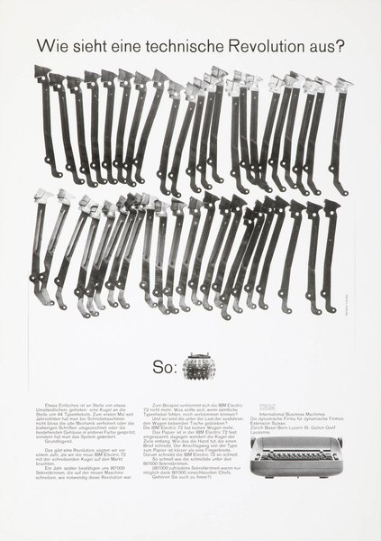
CRVI002797Karl Gerstner - Wie sieht eine technische Revolution aus?

CRVI002622Willie Colón - La Gran Fuga / The Big Break
1971
1971

CRVI002535Koloman Moser - Ein moderner Tantalus. Illustration für 'Meggendorfer Blätter'
1895
1895
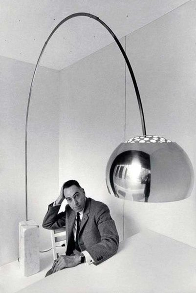
CRVI002728Achille Castiglioni and Pier Giacomo Castiglioni - Arco floor lamp
1962
1962
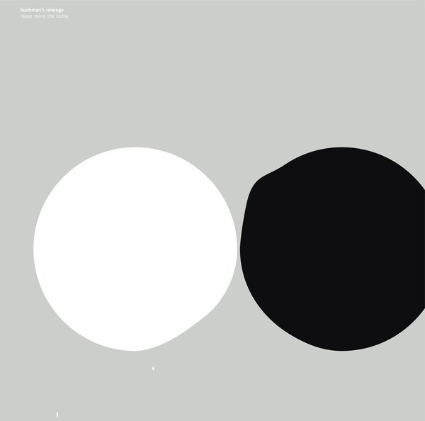
CRVI002997Kim Hiorthøy - Bushman's Revenge — Never Mind The Botox
2012
2012
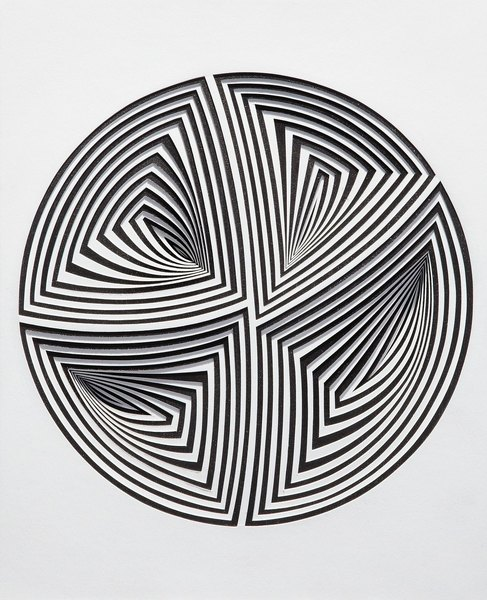
CRVI002780Unattributed - Untitled (concentric maze disc)

CRVI002713Shin Matsunaga - Shin Matsunaga Design: Razstava ob BIO 14
1994
1994
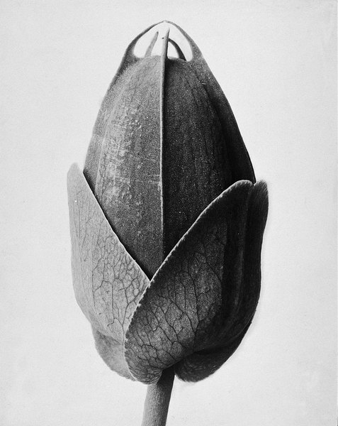
CRVI002817Karl Blossfeldt - Passionsblume (Passion Flower)

CRVI002577Howlin' Wolf - Moanin' in the Moonlight
1959
1959
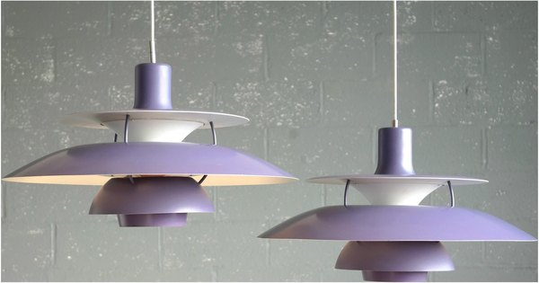
CRVI002726Poul Henningsen - PH 5 pendant (lilac)
1958
1958
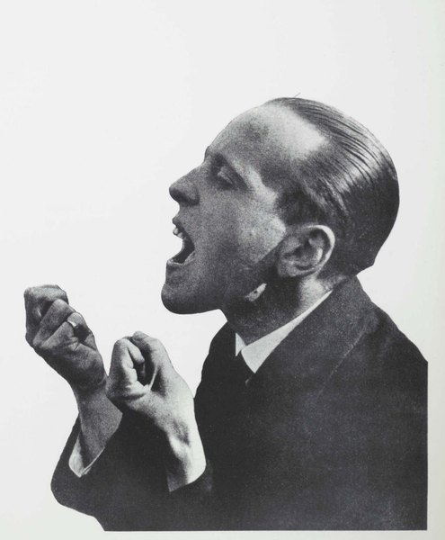
CRVI002850John Heartfield - Self-portrait
1920
1920

CRVI002270Sol LeWitt - Bands and arcs of colour

CRVI001408Peter Max - Different Drummer
Peter Max · 1960s · poster
Peter Max · 1960s · poster

CRVI000739Robert Beatty - Untitled
Album cover · artist and title unrecorded · Trendland plate 10
Album cover · artist and title unrecorded · Trendland plate 10

CRVI001450Philip Guston - Chair

CRVI002046Jenny Saville - Vis and Ramin
2018
2018

CRVI002048Jenny Saville - Gaze
2021–2024
2021–2024

CRVI000615D.W. Pine, Tim O'Brien - Stormy
TIME, April 23 2018 · 2018
TIME, April 23 2018 · 2018

CRVI002103Sigmar Polke - Schokoladenbild (Chocolate Painting)
1964
1964

CRVI001131Gene Harris & The Three Sounds - Live At The 'It Club'
Designed by Patrick Roques · Blue Note 7243 8 35338 · 1996
Designed by Patrick Roques · Blue Note 7243 8 35338 · 1996

CRVI000266Roman Cieślewicz - J.M.K. Hellcat
Theatre Poster · 1979 · 1979
Theatre Poster · 1979 · 1979

CRVI001238Mati Klarwein - Moses
Painting · plate V22-Moses on the artist's own site
Painting · plate V22-Moses on the artist's own site

CRVI002222Anni Albers - Unfinished study

CRVI002311Neo Rauch - Über den Dächern
2014
2014

CRVI001565Otto Dix - Self-Portrait as Mars

CRVI001682Gino Severini - Untitled (Futurist crowd)
1911
1911

CRVI002208Wassily Kandinsky - Moscow I
1916
1916

CRVI001705Franz Marc - The Bewitched Mill
1913
1913

CRVI000256Wiesław Wałkuski - The Idiots
Film Poster Designed By Wiesław Wałkuski · 1999 · 1999
Film Poster Designed By Wiesław Wałkuski · 1999 · 1999

CRVI000699Mr. Nana Agyq - Stop Making Sense
Hand-painted Ghanaian film poster
Hand-painted Ghanaian film poster

CRVI002219Anni Albers - Design 11/25 for Jacquard

CRVI001622André Derain - Ball of Soldiers in Suresnes
1903
1903

CRVI000410UTFO - UTFO
Designer unknown · Selecf · 1985
Designer unknown · Selecf · 1985

CRVI002015Zeng Fanzhi - Mask series (watermelon)

CRVI001345unattributed - Jodorowsky's Dune
Maker unidentified · 2013
Maker unidentified · 2013

CRVI001038Kiyoshi Awazu - The Friends
Offset lithograph, 28½ × 20¼ in. · LACMA, Marc Treib Collection · 1969
Offset lithograph, 28½ × 20¼ in. · LACMA, Marc Treib Collection · 1969

CRVI000583Artist unknown - A Christmas Carol
Federal Theatre for Youth · Works Progress Administration in Ohio · between 1936 and 1941
Federal Theatre for Youth · Works Progress Administration in Ohio · between 1936 and 1941

CRVI000587Unknown - Mastering the Expense Account Diet
New York, September 1, 1969 · 1969
New York, September 1, 1969 · 1969

CRVI001437Franz Karl Delavilla - Grosses Gartenfest: Die Tänzerin und die Marionette
Poster · 1907
Poster · 1907

CRVI001566Otto Dix - Dying Warrior

CRVI001209Sonny Rollins - The Sound Of Sonny
Designed by Paul Bacon, photograph by Paul Weller · Riverside Records RLP 12-241 · 1957
Designed by Paul Bacon, photograph by Paul Weller · Riverside Records RLP 12-241 · 1957

CRVI002356René Magritte - The Liberator (Le Libérateur)
1947
1947

CRVI001603John William Waterhouse - Circe Invidiosa
1892
1892

CRVI001816Pauline Boty - Colour Her Gone
1962
1962

CRVI001420Maurizio Cattelan - The Confessional
2026
2026

CRVI001977Kehinde Wiley - Two figures against a floral ground

CRVI002195Pablo Picasso - The Barefoot Girl
1895
1895

CRVI001850Unidentified - Concentric circles on black

CRVI000257Lech Majewski - Thank God It's Friday
Film Poster Designed By Lech Majewski · 1979 · 1979
Film Poster Designed By Lech Majewski · 1979 · 1979

CRVI001720Sonia Delaunay - Flamenco Singers (Large Flamenco)
1915–16
1915–16

CRVI002137Martha Rosler - Photo Op, from House Beautiful: Bringing the War Home
c. 2004–2008
c. 2004–2008

CRVI001150Jimmy Smith & Wes Montgomery - Jimmy & Wes: The Dynamic Duo
Designed by Acy Lehman, photograph by Chuck Stewart · Verve Records V6-8678 · 1966
Designed by Acy Lehman, photograph by Chuck Stewart · Verve Records V6-8678 · 1966

CRVI000371The Neville Brothers - Fiyo On The Bayou
Designer unknown · ASM · 1981
Designer unknown · ASM · 1981

CRVI001527Raphael Soyer - Portrait of a pregnant woman

CRVI001557Remedios Varo - Creation of the Birds
1957
1957

CRVI001200The Last Poets - Holy Terror
Painting by Mati Klarwein · Rykodisc RCD 10319 · 1993
Painting by Mati Klarwein · Rykodisc RCD 10319 · 1993

CRVI002387Emil Nolde - Brennendes Gehöft (detail)

CRVI001046 - Poster for the 9th Contemporary Japanese Sculpture Exhibition
Poster
Poster

CRVI001170Ronnie Laws - Pressure Sensitive
Designed by Bob Cato, artwork by Peter Lloyd · Blue Note BN-LA452-G · 1975
Designed by Bob Cato, artwork by Peter Lloyd · Blue Note BN-LA452-G · 1975

CRVI002317Neo Rauch - Untitled

CRVI002457Roberto Matta - The Unthinkable

CRVI001112El Lissitzky - Die Kunstismen / Les Ismes de l’Art / The Isms of Art, 1914–1924
Book cover · edited by El Lissitzky and Hans Arp · Eugen Rentsch, Erlenbach-Zürich · 1925
Book cover · edited by El Lissitzky and Hans Arp · Eugen Rentsch, Erlenbach-Zürich · 1925

CRVI000612Unknown - Scenes From New York's Therapy Crisis
New York, October 20, 1997 · 1997
New York, October 20, 1997 · 1997

CRVI001252Joe Beck - Beck
Designed by Bob Ciano, painting by Mati Klarwein · Kudu KU-21 S1 · 1975
Designed by Bob Ciano, painting by Mati Klarwein · Kudu KU-21 S1 · 1975

CRVI001740David Bomberg - In the Hold
1914
1914

CRVI000674Magnus Berger, Jennifer Pastore, Campbell Addy - The Innovators Issue
WSJ. Magazine, November 2019 · 2019
WSJ. Magazine, November 2019 · 2019

CRVI001541Archibald Motley - Mulatress with Figurine and Dutch Seascape

CRVI001573Georg Scholz - Street scene with the Upper Silesia plebiscite
1922
1922

CRVI002189René Magritte - The Difficult Crossing
1926
1926

CRVI001184Robert Venosa - Untitled — luminous tree
Painting
Painting

CRVI001887Mario Merz - Installation view, Palacio de Velázquez, Madrid

CRVI001943Vanessa Beecroft - Performance, long table

CRVI001344unattributed - Tron — the Solar Sailer deck, film still
Photographer unidentified · 1982
Photographer unidentified · 1982

CRVI001109Constantin Aladjalov - International Exhibition of Modern Art, arranged by the Société Anonyme for the Brooklyn Museum
Exhibition catalogue cover · Brooklyn Museum, November–December 1926 · 1926
Exhibition catalogue cover · Brooklyn Museum, November–December 1926 · 1926

CRVI001944Vanessa Beecroft - Performance, seated group

CRVI002255Andy Warhol - Superman
1961
1961

CRVI001033Adrian Ghenie - Untitled painting
Galerie Judin, Berlin
Galerie Judin, Berlin

CRVI000595Unknown - TV vs. the Pols: Who's Using Whom?
New York, June 26, 1972 · 1972
New York, June 26, 1972 · 1972

CRVI001473Winslow Homer - The Brierwood Pipe
1864
1864

CRVI001505Stanton Macdonald-Wright - Sunrise Synchromy in Violet
1918
1918

CRVI001103Utagawa Yoshifusa - Kiyomori's Visit to Nunobiki Waterfall: The Ghost of Yoshihira Taking Revenge on Nanba
Woodblock-printed triptych (nishiki-e), ink and color on paper · Edo period · The Metropolitan Museum of Art, New York · 1856
Woodblock-printed triptych (nishiki-e), ink and color on paper · Edo period · The Metropolitan Museum of Art, New York · 1856

CRVI001212Thelonious Monk - Underground
Designed by John Berg, Richard Mantel, photograph by Horn/Griner · Columbia CS 9632 · 1968
Designed by John Berg, Richard Mantel, photograph by Horn/Griner · Columbia CS 9632 · 1968

CRVI001829Victor Vasarely - Vega-Anneaux

CRVI002062Salman Toor - Two men embracing

CRVI000225Unknown - Bumblebee coffin
Ghanaian fantasy coffin · The Art Underground, Museum of International Folk Art, Santa Fe
Ghanaian fantasy coffin · The Art Underground, Museum of International Folk Art, Santa Fe

CRVI000351Parlet - Pleasure Principle
Designer unknown · Casablanca · 1978
Designer unknown · Casablanca · 1978

CRVI000171Sonny Rollins - The Sound of Sonny
Designer unknown · Riverside RLP 12-241 · 1957
Designer unknown · Riverside RLP 12-241 · 1957

CRVI001569Christian Schad - Zwei Mädchen
1928
1928

CRVI001575Georg Scholz - Kakteen und Semaphore
1923
1923

CRVI002283Michael Heizer - City

CRVI000569Anita Kunz - No Photos, Please!
The New Yorker, August 29, 2022 · 2022
The New Yorker, August 29, 2022 · 2022

CRVI002179Yasumasa Morimura - Self-portrait after David's Napoleon

CRVI001930Georg Baselitz - Woodman (Waldarbeiter)
1969
1969

CRVI001680Carlo Carrà - The Drunken Gentleman
1916
1916

CRVI000148Pharoah Sanders - Tauhid
Designed by Robert (Viceroy) Flynn · Impulse! AS-9138 · 1966
Designed by Robert (Viceroy) Flynn · Impulse! AS-9138 · 1966

CRVI001265Donald Byrd - Off To The Races
Designed by Reid Miles, photograph by Francis Wolff · Blue Note 4007 · 1959
Designed by Reid Miles, photograph by Francis Wolff · Blue Note 4007 · 1959

CRVI001026Adrian Ghenie - The Arrival
Oil on canvas, 210 × 165 cm · 2014
Oil on canvas, 210 × 165 cm · 2014

CRVI000250Peter Bentley - The Wanting Seed
Cover for Anthony Burgess · Penguin
Cover for Anthony Burgess · Penguin

CRVI000313Shut Up and Dance - Dance Before the Police Come
Designer unknown · p And Dance · 1991
Designer unknown · p And Dance · 1991

CRVI002391Bruce Nauman - Human Nature/Knows Doesn't Know
1983/1986
1983/1986

CRVI000057B12 - Time Tourist
Designed by The Designers Republic, Trevor Webb · Warp Records · 1996
Designed by The Designers Republic, Trevor Webb · Warp Records · 1996

CRVI001589Ralph Goings - Donut
1995
1995

CRVI001022Gustave Courbet - Le Fou de peur (The Man Mad with Fear)
Oil on paper mounted on canvas, 60.5 × 50.5 cm · Nasjonalmuseet, Oslo · c. 1844–1845
Oil on paper mounted on canvas, 60.5 × 50.5 cm · Nasjonalmuseet, Oslo · c. 1844–1845

CRVI001629Othon Friesz - Rocky Coast
1896
1896

CRVI002310Neo Rauch - Hüter der Nacht
2014
2014

CRVI002250unattributed - A man leaning on Claes Oldenburg's Geometric Mouse

CRVI000226Unknown - Sanitation truck coffin
Ghanaian fantasy coffin · The Art Underground, Museum of International Folk Art, Santa Fe
Ghanaian fantasy coffin · The Art Underground, Museum of International Folk Art, Santa Fe

CRVI001383Harry Bertoia - Untitled
Print by Harry Bertoia · c. 1945 · Whitney Museum of American Art · 1945
Print by Harry Bertoia · c. 1945 · Whitney Museum of American Art · 1945

CRVI002129Ed Kienholz - Installation view, Schirn Kunsthalle

CRVI000062Reliq - Minority Report
Artwork by Tomokazu Matsuyama · Noble · 2011
Artwork by Tomokazu Matsuyama · Noble · 2011

CRVI002315Neo Rauch - Untitled

CRVI000312The Human League - Reproduction
Designer unknown · Virgin · 1979
Designer unknown · Virgin · 1979

CRVI001548René Magritte - La durée poignardée (Time Transfixed)
1938
1938
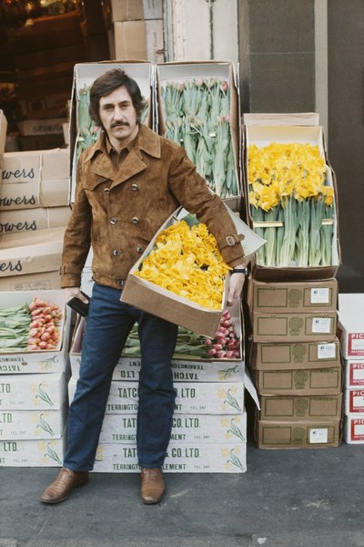
CRVI002325Unidentified - Ed Ruscha with a box of daffodils

CRVI001250Mati Klarwein - Landscape Described
Painting · plate landscape-described-1963 on the artist's own site · 1963
Painting · plate landscape-described-1963 on the artist's own site · 1963

CRVI001732Mikhail Larionov - Still Life with Lobster
1907
1907

CRVI001226Mati Klarwein - Untitled
Painting · plate P26-vol2-152 on the artist's own site
Painting · plate P26-vol2-152 on the artist's own site

CRVI001151Jimmy Smith - Stay Loose... Jimmy Smith Sings Again
Photograph by Howell Conant · Verve Records V6-8745 · 1968
Photograph by Howell Conant · Verve Records V6-8745 · 1968

CRVI001242Mati Klarwein - Evil
Painting · plate V24-Evil on the artist's own site
Painting · plate V24-Evil on the artist's own site

CRVI002074Christian Schad - Woman in profile with a fur

CRVI000680Magnus Berger, Esmé René, Robert Polidori - The Sistine Chapel
WSJ. Magazine, April 2019 · 2019
WSJ. Magazine, April 2019 · 2019

CRVI001355H.R. Giger - Dune production bible — Harkonnen structure
Illustration by H.R. Giger · Jodorowsky's Dune production bible, 1975 · 1976
Illustration by H.R. Giger · Jodorowsky's Dune production bible, 1975 · 1976

CRVI001752Walter Gropius - Bauhaus Master Houses, Dessau: isometric site plan
1925–1926
1925–1926

CRVI001063Lezley Saar - The Silent Woman
Shown in 'Lezley Saar: Salon des Refusés', California African American Museum, 2017–18
Shown in 'Lezley Saar: Salon des Refusés', California African American Museum, 2017–18

CRVI001317John Currin - Couple with a fruited hat

CRVI001927Anselm Kiefer - Parsifal III
1973
1973

CRVI001204Mati Klarwein - La Profeta
Painting · plate R17-vol3-59 on the artist's own site
Painting · plate R17-vol3-59 on the artist's own site

CRVI002463Eric Yahnker - Barack Obama placing a medal on Tupac Shakur

CRVI001559Dorothea Tanning - Voltagem
1942
1942

CRVI002401Ralfi Pagán - Ralfi Pagán
1969
1969

CRVI001769Amédée Ozenfant - Landscape (Bordeaux II)
1918
1918

CRVI000770Paula Scher - Best of Jazz
Lithograph · 91.1 × 68.9 cm · 1979
Lithograph · 91.1 × 68.9 cm · 1979

CRVI001398Giorgio de Chirico - The Disquieting Muses
Giorgio de Chirico · 1918 · 1918
Giorgio de Chirico · 1918 · 1918

CRVI002051John Currin - Nude on a Table
2001
2001

CRVI002092Lucian Freud - Portrait of a Young Man

CRVI001620Georges Lacombe - The Green Wave (Vorhor)
1896
1896

CRVI000522Gian Gisiger - AȘAP Rocky
Highsnobiety · 2023
Highsnobiety · 2023

CRVI001463John William Waterhouse - The Magic Circle
1886
1886

CRVI001502Gustav Klutsis - Spartakiada Moskau 1928
Postcard · 1928
Postcard · 1928

CRVI000436Panda Bear - Person Pitch
Designer unknown · Paw Tracks · 2007
Designer unknown · Paw Tracks · 2007

CRVI001997Wangechi Mutu - Figure on a map ground

CRVI000283Unknown - Japanese Pharmacy Ad
Poster
Poster

CRVI001608Jan Toorop - Novemberzon
1888
1888

CRVI001225Mati Klarwein - Untitled
Painting · plate P24-vol2-134 on the artist's own site
Painting · plate P24-vol2-134 on the artist's own site

CRVI001662Jean Metzinger - Woman with a Fan
1913
1913

CRVI002234Oskar Schlemmer - Danza coi pali (Stäbetanz)
1928
1928

CRVI002367John Currin - Rachel in Fur
2002
2002

CRVI002472Willie Colón - Cosa Nuestra
1969
1969

CRVI002402Willie Colón and Héctor Lavoe - Crime Pays
1972
1972

CRVI002236unattributed - Bauhaus weaving, banded stripes in blue, apricot and black

CRVI000331Shorty Long - Here Comes The Judge
Designer unknown · Soul · 1968
Designer unknown · Soul · 1968

CRVI001771Unidentified - Figures with a boat

CRVI001607Unidentified - Woman on marble steps at the water's edge

CRVI001106Utagawa Kuniyoshi - Kurō Hōgan Yoshitsune at Horikawa (Chapter 31, Makibashira)
Woodblock print (nishiki-e), ōban · from Genji kumo ukiyo-e awase · Published by Iseya Ichibei · c. 1845–1846
Woodblock print (nishiki-e), ōban · from Genji kumo ukiyo-e awase · Published by Iseya Ichibei · c. 1845–1846

CRVI001824Victor Vasarely - Zèbres
1959
1959

CRVI002057Christina Quarles - Fold Gently
2023
2023

CRVI001649Pablo Picasso - The Frugal Meal
September 1904, printed 1913
September 1904, printed 1913

CRVI001568Christian Schad - Self-Portrait
1927
1927

CRVI001554Leonora Carrington - El mundo mágico de los mayas
Detail of the mural · 1964
Detail of the mural · 1964

CRVI001451Philip Guston - Gladiators
1940
1940

CRVI001396Giorgio de Chirico - The Evil Genius of a King
Giorgio de Chirico · 1914 · 1914
Giorgio de Chirico · 1914 · 1914

CRVI000618Leo Jung, Trent Davis Bailey - A Kingdom From Dust
The California Sunday Magazine, February 4 2018 · 2018
The California Sunday Magazine, February 4 2018 · 2018

CRVI001413Giorgio de Chirico - Il continente misterioso
Giorgio de Chirico · 1968 · 1968
Giorgio de Chirico · 1968 · 1968

CRVI002480Mongo Santamaría - Sofrito
1976
1976

CRVI002341Paul McCarthy - Figure with rabbit head

CRVI000112Kiyoshi Awazu - Kiyoshi Awazu Exhibition & Workshop
The 43rd International Design Conference in Aspen · 1993
The 43rd International Design Conference in Aspen · 1993

CRVI000278Wiktor Sadowski - Art Center for Children and Youth
Event Poster · 1996 · 1996
Event Poster · 1996 · 1996

CRVI001190Mati Klarwein - Camouflage
Painting · 1985–1987
Painting · 1985–1987

CRVI001018Édouard Manet - Portrait of Minnay
Oil on canvas, 32 × 24 cm · Sold Drouot Estimations, 26 February 2021 · c. 1879
Oil on canvas, 32 × 24 cm · Sold Drouot Estimations, 26 February 2021 · c. 1879

CRVI001456Dante Gabriel Rossetti - Ecce Ancilla Domini! (The Annunciation)
1849–50
1849–50

CRVI001193Mati Klarwein - Untitled
Painting
Painting

CRVI000378Thai Elephant Orchestra /Dave Soldier / Richard Lair - Elephonic Rhapsodies
Designer unknown · Mulatta · 2005
Designer unknown · Mulatta · 2005

CRVI001597Georges Seurat - The Mower
1881–82
1881–82

CRVI001476Vincent van Gogh - The Large Plane Trees (Road Menders at Saint-Rémy)
1889
1889

CRVI002456Roberto Matta - Figures around a lit basin

CRVI001696Natalia Goncharova - Cyclist
1913
1913

CRVI001524Joan Mitchell - Untitled
1956
1956

CRVI002061Salman Toor - The Punishment

CRVI000858Julian Stanczak - Unbounded
1991 · 1991
1991 · 1991

CRVI001840Carlos Cruz-Diez - Miércoles, from Serie Semana

CRVI001599Charles Angrand - The Western Railway at its Exit from Paris
1886
1886

CRVI002097Frank Auerbach - Head of Gerda Boehm

CRVI002090Francis Bacon - Study after Velázquez's Portrait of Pope Innocent X

CRVI001186Aïyb Dieng - Rhythmagick
Designed by Aldo Sampieri, painting by Mati Klarwein, photograph by Thi-Linh Le · Subharmonic SD7021-2 · 1997
Designed by Aldo Sampieri, painting by Mati Klarwein, photograph by Thi-Linh Le · Subharmonic SD7021-2 · 1997

CRVI000593Unknown - Some Thoughtful Parents Care Enough About Their Kids' Education to Send Them to Public Schools
New York, November 8, 1971 · 1971
New York, November 8, 1971 · 1971

CRVI001105Utagawa Kuniyoshi - Hakumenrōkun Teitenju, from The 108 Heroes of the Popular Suikoden
Woodblock print (nishiki-e), ōban · Tsūzoku Suikoden gōketsu hyakuhachinin no hitori · Published by Kaga-ya Kichiemon · c. 1827–1830
Woodblock print (nishiki-e), ōban · Tsūzoku Suikoden gōketsu hyakuhachinin no hitori · Published by Kaga-ya Kichiemon · c. 1827–1830

CRVI002027Neo Rauch - Vater
2007
2007

CRVI002193Georges Braque - Violin and Candlestick
1910
1910

CRVI001774Unidentified - Figure with rope coils and hose

CRVI001987Njideka Akunyili Crosby - Cradle Your Conquest

CRVI001788Unidentified - Sprayed composition

CRVI000822Seymour Chwast - Color
Noblet Sérigraphie · 56 × 89 cm
Noblet Sérigraphie · 56 × 89 cm

CRVI000059Various - The Philosophy of Sound and Machine
Designed by Third Earth · Applied Rhythmic Technology · 1992
Designed by Third Earth · Applied Rhythmic Technology · 1992

CRVI000749Jim Cherry - Mondo Face
Airbrush illustration
Airbrush illustration

CRVI001673Giacomo Balla - Street Light
1909
1909

CRVI001474Dwight William Tryon - After Sunset, Looking East

CRVI001990Lynette Yiadom-Boakye - Figure at a window with a dog

CRVI001984Njideka Akunyili Crosby - Witch Doctor Revisited
2011
2011

CRVI000819Seymour Chwast - Push Pin Butcher
Mixed media · 46 × 74 cm · 1981
Mixed media · 46 × 74 cm · 1981

CRVI001985Njideka Akunyili Crosby - Efulefu: The Lost One
2011
2011

CRVI002098Leon Kossoff - Swimming pool

CRVI002034Amy Sillman - Untitled

CRVI001534Diego Rivera - Portrait of Ramón Gómez de la Serna
1915
1915

CRVI002029Rudolf Stingel - Untitled
2023
2023

CRVI000009The Future Sound Of London - Lifeforms
Artwork by Buggy G. Riphead · Virgin · 1994
Artwork by Buggy G. Riphead · Virgin · 1994

CRVI000383Brainticket - Celestial Ocean
Designer unknown · RCA Victor · 1972
Designer unknown · RCA Victor · 1972

CRVI000763Tadeusz Gronowski - Polski Plakat Filmowy
Filmowa Agencja Wydawnicza, Warsaw · jacket design · 1957
Filmowa Agencja Wydawnicza, Warsaw · jacket design · 1957

CRVI002202Fernand Léger - The Proof that Man Descends from the Monkey
1915
1915

CRVI002209Wassily Kandinsky - Improvisation 'Gorge'
1914
1914

CRVI002455Roberto Matta - Listen to Living (Écoutez vivre)
1941
1941

CRVI002040Tauba Auerbach - Extended Object
2018
2018

CRVI001435Unidentified - Interior with patterned walls and chequered door

CRVI001624André Derain - Still Life on the Table
1904
1904

CRVI000850New West - A Star Is Born
New West Magazine
New West Magazine

CRVI001664Jean Metzinger - Petit port, pêcheurs et bateaux au quai
1906
1906

CRVI000128Koichi Sato - The 6th Iwaki Prefecture Art Festival
1982
1982

CRVI001181Wes Montgomery - So Much Guitar!
Designed by Ken Deardoff, photograph by Donald Silverstein · Riverside Records RLP 382 · 1961
Designed by Ken Deardoff, photograph by Donald Silverstein · Riverside Records RLP 382 · 1961

CRVI002175Yasumasa Morimura - Self-portrait as a bride

CRVI002257Roy Lichtenstein - Yellow and Red Brushstrokes
1966
1966

CRVI001923Ana Mendieta - Untitled (feather work)

CRVI002451Roberto Matta - How Ever
1947
1947

CRVI001558Remedios Varo - Simpatía (La rabia del gato)
1955
1955

CRVI002258Roy Lichtenstein - Shipboard Girl

CRVI001893Unidentified - Neon composition after Mondrian with text panels

CRVI001678Gino Severini - Armored Train in Action
1915
1915

CRVI002025Neo Rauch - Mars
2002
2002

CRVI001434Gustav Klimt - I. Kunstausstellung der Vereinigung Bildender Künstler Österreichs Secession
Poster · 1898
Poster · 1898

CRVI000161Kazumasa Nagai - Peace
Designed by Kazumasa Nagai · 1989
Designed by Kazumasa Nagai · 1989

CRVI001402Ken Deardoff - Takin' Care Of Business
Designed by Ken Deardoff · Charlie Rouse Quintet · Jazzland · 1960 · 1960
Designed by Ken Deardoff · Charlie Rouse Quintet · Jazzland · 1960 · 1960

CRVI001286Elmo Hope Sextet - Informal Jazz
Designed by Tom Hannan, photograph by Bob Weinstock · Prestige 7043 · 1956
Designed by Tom Hannan, photograph by Bob Weinstock · Prestige 7043 · 1956

CRVI002055Jonas Wood - Plants in an interior

CRVI000523Unknown - It's Good to Be Bad Bunny
Vanity Fair
Vanity Fair

CRVI001313Martin Denny - Exotica Volume II
Photograph by Garrett-Howard · Liberty LST 7006 · 1958
Photograph by Garrett-Howard · Liberty LST 7006 · 1958

CRVI001137Herbie Hancock - Maiden Voyage
Designed by Reid Miles · Blue Note BLP 4195 · 1965
Designed by Reid Miles · Blue Note BLP 4195 · 1965

CRVI001550Yves Tanguy - Through Birds, Through Fire, but Not Through Glass
1943
1943

CRVI000608Unknown - Is Your Cat Contemplating Suicide?
New York, April 24, 1995 · 1995
New York, April 24, 1995 · 1995

CRVI001708August Macke - Anglers on the Rhine
1907
1907

CRVI000056The Other People Place - Lifestyles Of The Laptop Café
Designed by The Designers Republic · 2001
Designed by The Designers Republic · 2001

CRVI000289Ikko Tanaka - Faces
Poster
Poster

CRVI000549Gail Bichler - The Passion of Questlove
The New York Times Magazine, October 17, 2021 · 2021
The New York Times Magazine, October 17, 2021 · 2021

CRVI002249Claes Oldenburg and Coosje van Bruggen - Shuttlecocks
1994
1994

CRVI000019Two Lone Swordsmen - Stay Down
Designed by Haywire, James Woodbourne · Warp Records · 1998
Designed by Haywire, James Woodbourne · Warp Records · 1998

CRVI000719Oneohtrix Point Never - Magic Oneohtrix Point Never
Insert panel B · designed by Robert Beatty · Warp Records · 2020
Insert panel B · designed by Robert Beatty · Warp Records · 2020

CRVI000745Mississippi Records - Chess Of The Wind
Screening and soundtrack poster · designed by Sam Wenc
Screening and soundtrack poster · designed by Sam Wenc

CRVI000509Unknown - Anthony Fauci
Bloomberg Businessweek, 7 December 2020 · opening spread · 2020
Bloomberg Businessweek, 7 December 2020 · opening spread · 2020

CRVI002427Gustav Klutsis - Postcard for the All-Union Spartakiada
1928
1928

CRVI001287Hank Mobley - Mobley's Message
Designer unrecorded · Prestige 7061 · 1957
Designer unrecorded · Prestige 7061 · 1957

CRVI001311Les Baxter - Sensational!
Designer unrecorded · Capitol T 1388 · 1960
Designer unrecorded · Capitol T 1388 · 1960

CRVI000306Haruomi Hosono - Philharmony
Designer unknown · Yen · 1982
Designer unknown · Yen · 1982

CRVI002282John Baldessari - Poster with a green dot

CRVI001727František Kupka - Babylon
1906
1906

CRVI002301Kerry James Marshall - Untitled (Mask Boy)

CRVI001296Red Garland - All Kinds Of Weather
Designer unrecorded · Prestige 7148 · 1959
Designer unrecorded · Prestige 7148 · 1959

CRVI002285Damien Hirst - The Physical Impossibility of Death in the Mind of Someone Living
1991
1991

CRVI001182unattributed - Statue of Liberty with Bloomingdale's shopping bags
Designer unrecorded
Designer unrecorded

CRVI000878Maurice Denis - Annonciation d’Assise
Huile sur carton · 54,5 × 72 cm · 1914
Huile sur carton · 54,5 × 72 cm · 1914

CRVI000808Mark Tansey - Nature’s Ape
Oil on canvas · 195.6 × 167.6 cm · 1984
Oil on canvas · 195.6 × 167.6 cm · 1984

CRVI000506Justin Patrick Long - The Great Fire
Vanity Fair, September 2020 · 2020
Vanity Fair, September 2020 · 2020

CRVI002437Non-Format - Lara Jones — Dome
2024
2024

CRVI001280Teddy Charles, Idrees Sulieman, John Jenkins, Mal Waldron - Coolin'
Designed by Esmond Edwards · New Jazz 8216 · 1959
Designed by Esmond Edwards · New Jazz 8216 · 1959

CRVI000295Parliament - Mothership Connection
Designer unknown · Casablanca · 1975
Designer unknown · Casablanca · 1975

CRVI002278Frank Stella - Untitled

CRVI002081Camille Henrot - Installation view
2025
2025

CRVI002397Héctor Lavoe - Revento
1985
1985

CRVI000468Unknown - The Year Ahead: 2015
Bloomberg Businessweek, November 10, 2014 – January 6, 2015 · 2014
Bloomberg Businessweek, November 10, 2014 – January 6, 2015 · 2014

CRVI000562Cian Browne - Zendaya
W · 2022
W · 2022

CRVI001499Gustav Klutsis - Postcard Commemorating the Russian All-Union Spartakiada
1928
1928

CRVI002326Ed Ruscha - The End

CRVI002355Unidentified - Man in a suit with an eye for a head

CRVI000218Yayoi Kusama - Kusama painting, Tokyo
Photograph by Motohiko Hasui · at the media preview of the Yayoi Kusama Museum · 2017
Photograph by Motohiko Hasui · at the media preview of the Yayoi Kusama Museum · 2017

CRVI001561Giorgio de Chirico - Melancholy of Departure
1916
1916

CRVI000347Funkadelic - Standing On The Verge Of Getting It On
Designer unknown · Westbound · 1974
Designer unknown · Westbound · 1974

CRVI002298Kerry James Marshall - Untitled

CRVI001993Jordan Casteel - Woman on a fire escape
2020
2020

CRVI000172Sonny Rollins - Way Out West
Designer unknown · Contemporary S7530
Designer unknown · Contemporary S7530

CRVI002108Martin Kippenberger - Untitled

CRVI001198Mati Klarwein - You're Next
Painting
Painting

CRVI001322Peter Lloyd - The Crack in the Sky, by Richard A. Lupoff
Illustration by Peter Lloyd · Dell · 1976
Illustration by Peter Lloyd · Dell · 1976

CRVI002017Zeng Fanzhi - Van Gogh IV

CRVI001129Eric Dolphy - Out To Lunch!
Designed by Reid Miles · Blue Note BLP 4163 · 1964
Designed by Reid Miles · Blue Note BLP 4163 · 1964

CRVI002459Roberto Matta - Blue ground with three grey figures

CRVI000515Gian Gisiger - NewJeans
Highsnobiety · 2023
Highsnobiety · 2023

CRVI000661Unknown - The New York Times Magazine, May 24, 2009
The New York Times Magazine, May 24, 2009 · 2009
The New York Times Magazine, May 24, 2009 · 2009

CRVI001639Emil Nolde - Sea with steamers
1910
1910

CRVI001350Elvis Costello & The Attractions - Almost Blue
Designed by Barney Bubbles, photograph by Keith Morris · F-Beat · 1981
Designed by Barney Bubbles, photograph by Keith Morris · F-Beat · 1981

CRVI000394Grace Jones - Portfolio
Designer unknown · Island Records · 1977
Designer unknown · Island Records · 1977

CRVI000317Farben - Textstar
Designer unknown · Klang Elektronik · 2002
Designer unknown · Klang Elektronik · 2002

CRVI001700Benedetta Cappa - Lights
1924
1924

CRVI001741David Bomberg - Barges
1919
1919

CRVI002166Roberto Matta - Pyrocentre

CRVI000471Unknown - Samsung's Secret
Bloomberg Businessweek
Bloomberg Businessweek

CRVI001405Duane Hanson - Bodybuilder
Duane Hanson · 1989 · designed 1989, executed 1992 · bronze, polychromed · 1989
Duane Hanson · 1989 · designed 1989, executed 1992 · bronze, polychromed · 1989

CRVI000344James Brown & The Famous Flames - Cold Sweat
Designer unknown · King · 1967
Designer unknown · King · 1967

CRVI000665Ryan McGinley - The Long Adolescence of Lucas Hedges
GQ, March 2019 · 2019
GQ, March 2019 · 2019

CRVI000461Richard Turley - Let's Get It On
Bloomberg Businessweek, 6–12 February 2012 · 2012
Bloomberg Businessweek, 6–12 February 2012 · 2012

CRVI002251Claes Oldenburg and Coosje van Bruggen - Saw, Sawing
1996
1996

CRVI002266Christo and Jeanne-Claude - Wrapped Reichstag
1995
1995

CRVI001994Unidentified - Seated woman with a doll

CRVI001393Giorgio de Chirico - The Song of Love
Giorgio de Chirico · 1914 · 1914
Giorgio de Chirico · 1914 · 1914

CRVI002026Neo Rauch - Entfaltung
2008
2008

CRVI002336Neo Rauch - Der Übergang
2018
2018

CRVI000388Manuel Göttsching - Inventions For Electric Guitar (Mixed Tracks)
Designer unknown · Kosmische Musik · 1975
Designer unknown · Kosmische Musik · 1975

CRVI001609Tom Blackwell - Howdy

CRVI001686Gino Severini - The Haunting Dancer
1911
1911

CRVI001734Natalia Goncharova - Linen
1913
1913

CRVI001090Kim Laughton - Untitled

CRVI000604Unknown - Dan on the Run
New York, February 3, 1986 · 1986
New York, February 3, 1986 · 1986

CRVI001805Roy Lichtenstein - Brushstroke
1965
1965

CRVI002080Lizzie Fitch and Ryan Trecartin - Installation view

CRVI000143Kenny Drew - This Is New
Designed by Paul Bacon · 1957
Designed by Paul Bacon · 1957

CRVI002376Jan Sawka - Figures at a table before a wall of small panels

CRVI001755László Moholy-Nagy - Self-Portrait
1919
1919

CRVI000812Mark Tansey - Repairing the Wheel
Oil on canvas · 1996
Oil on canvas · 1996

CRVI001085Kim Laughton - Untitled

CRVI000414MC Hammer - Please Hammer Don't Hurt 'Em
Designer unknown · Capia · 1090
Designer unknown · Capia · 1090

CRVI002106Martin Kippenberger - Flying Tanga

CRVI001582Ralston Crawford - Grain elevators

CRVI002205Fernand Léger - The Staircase
1913
1913

CRVI001096Kim Laughton - Untitled

CRVI000243Jim Stoddart - Horse Under Water
Cover for Len Deighton · Penguin · 2021
Cover for Len Deighton · Penguin · 2021

CRVI000180Tricky Lofton & Carmell Jones - Brass Bag
Designed by Woody Woodward · 1962
Designed by Woody Woodward · 1962

CRVI001507David Bomberg - Ju-Jitsu
1913
1913

CRVI002013Cao Fei - Duotopia

CRVI001728Patrick Henry Bruce - Still Life
1924
1924

CRVI000504Stephen Skalocky - Empty Arena
Sports Illustrated, April 2020 · 2020
Sports Illustrated, April 2020 · 2020

CRVI001818Pauline Boty - Big Jim Colosimo
1963
1963

CRVI001543William H. Johnson - Portrait of Ilya Bolotowsky
1930
1930

CRVI001365Sonny Rollins - Sonny Rollins, Volume 1
Designed by Reid Miles, photograph by Francis Wolff · Blue Note 1542 · 1957
Designed by Reid Miles, photograph by Francis Wolff · Blue Note 1542 · 1957

CRVI002322unattributed - Tauba Auerbach wearing a glass necklace

CRVI001282Gigi Gryce Quintet - Saying Somethin'!
Designed by Esmond Edwards · New Jazz 8230 · 1962
Designed by Esmond Edwards · New Jazz 8230 · 1962

CRVI000356The Bar-Kays - Money Talks
Designer unknown · Stax · 1978
Designer unknown · Stax · 1978

CRVI001070Lo-Key? - Where Dey At?
Designed by Kevin Hosmann, photograph by Eddie Wolfl · Perspective Records 28968 1003 2 · 1992
Designed by Kevin Hosmann, photograph by Eddie Wolfl · Perspective Records 28968 1003 2 · 1992

CRVI000357The Meters - Rejuvenation
Designer unknown · Reprise · 1974
Designer unknown · Reprise · 1974

CRVI002316Neo Rauch - Untitled

CRVI002375Jan Sawka - Reclining striped figure with small watching heads

CRVI001718Robert Delaunay - Paysage au disque solaire
c. 1906
c. 1906

CRVI001595Tom Blackwell - Shatzi
1978
1978

CRVI001995Jordan Casteel - Twins
2017
2017

CRVI001121Lee Konitz, Brad Mehldau, Charlie Haden - Alone Together
Designed by Patrick Roques, painting by Kenneth Noland · Blue Note 7243 8 57150 2 0 · 1997
Designed by Patrick Roques, painting by Kenneth Noland · Blue Note 7243 8 57150 2 0 · 1997

CRVI001888Alighiero Boetti - Untitled

CRVI000277Andrzej Pągowski - State of Fear
Film Poster · 1989 · 1989
Film Poster · 1989 · 1989

CRVI001719Sonia Delaunay - Jazz
Dress or furnishing fabric · 1977 (designed 1920)
Dress or furnishing fabric · 1977 (designed 1920)

CRVI000694Heavy J - Vertigo
Hand-painted Ghanaian film poster
Hand-painted Ghanaian film poster

CRVI002087Andreas Gursky - Pyongyang

CRVI002378Jan Sawka - Overlapping discs with faces and city names

CRVI000771Chermayeff & Geismar - Pictures
Mobil Masterpiece Theatre · 1983
Mobil Masterpiece Theatre · 1983

CRVI001100Kim Laughton - Untitled

CRVI001487Man Ray - Black and White (Noire et blanche)
1926
1926

CRVI000174The Modern Jazz Quartet - The Sheriff
Designer unknown · Atlantic 1414 · 1964
Designer unknown · Atlantic 1414 · 1964

CRVI001062Lezley Saar - Thérèse Raquin
From the series Madwoman in the Attic · 2011
From the series Madwoman in the Attic · 2011

CRVI000747Unknown - Clarity
Designed by Sam Wenc
Designed by Sam Wenc

CRVI002043Christopher Wool - Untitled (P603)
2010
2010

CRVI002114Tadeusz Kantor - Drawing

CRVI002194Georges Braque - Still Life with Bottle of Bass
1914
1914

CRVI001210Bill Evans Trio - Haunted Heart: The Legendary Riverside Studio Recordings
Designer unrecorded
Designer unrecorded

CRVI002076Christian Schad - Operation
1929
1929

CRVI001428Rirkrit Tiravanija - Untitled (newspaper painting)
Installation view · Gladstone Gallery, Art Basel Hong Kong
Installation view · Gladstone Gallery, Art Basel Hong Kong
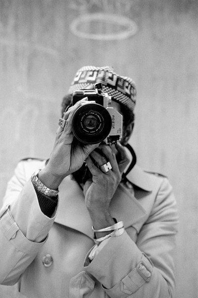
CRVI002759Unattributed - Barkley L. Hendricks photographing

CRVI000910Shure Brothers, Inc. - S
Trademark · Piezoelectric Instruments to Measure and Analyze Vibrations · Chicago, Illinois · designer unknown · 1952
Trademark · Piezoelectric Instruments to Measure and Analyze Vibrations · Chicago, Illinois · designer unknown · 1952

CRVI002044Jenny Saville - Propped
1992
1992

CRVI002312Neo Rauch - Der Felsenwirt
2014
2014

CRVI001052Takenobu Igarashi - Untitled poster
Poster · The Museum of Modern Art, New York
Poster · The Museum of Modern Art, New York

CRVI002150Louise Lawler - Pollyanna (adjusted to fit)
2007/2008/2012
2007/2008/2012

CRVI000332100 Proof (Aged In Soul) - Somebody's Been Sleeping in My Bed
Designer unknown · HotWax · 1970
Designer unknown · HotWax · 1970

CRVI001653Juan Gris - Bottles and Knife
1912
1912

CRVI001075Kim Laughton - Untitled
Cover of DIS Magazine
Cover of DIS Magazine

CRVI000235Coldcut - Philosophy
Designer unknown · Ninja Tune · 1993
Designer unknown · Ninja Tune · 1993

CRVI000090Michal Turtle - Phantoms Of Dreamland
Designer unknown · 2016
Designer unknown · 2016

CRVI001921Ana Mendieta - Untitled (Glass on Body Imprints)

CRVI000020Andy Stott - Faith In Strangers
Artwork by Herbert Matter · 2014
Artwork by Herbert Matter · 2014

CRVI001358Karl Haendel - Roses (inverted and flipped)
Pencil on paper mounted on panel · 130.8 × 99.7 cm · 2023
Pencil on paper mounted on panel · 130.8 × 99.7 cm · 2023

CRVI002133Carolee Schneemann - Sequence of falling figures

CRVI000066Bourbonese Qualk - Hope
Designer unknown · Recloose Organisation · 1984
Designer unknown · Recloose Organisation · 1984

CRVI000224SOIL & "PIMP" SESSIONS - Pimp Of The Year
Designer unknown · Victor · 2006
Designer unknown · Victor · 2006

CRVI002587John Lee Hooker - The Real Folk Blues
1966
1966

CRVI001800Yves Klein - Blue sponge sculpture

CRVI001126Dexter Gordon - Our Man In Paris
Designed by Reid Miles, photograph by Francis Wolff · Blue Note BLP 4146 · 1963
Designed by Reid Miles, photograph by Francis Wolff · Blue Note BLP 4146 · 1963

CRVI002467Eric Yahnker - Two Kurt Cobains embracing

CRVI001146Jackie McLean - Right Now!
Designed by Reid Miles, photograph by Francis Wolff · Blue Note BST 84215 · 1966
Designed by Reid Miles, photograph by Francis Wolff · Blue Note BST 84215 · 1966

CRVI000801Joseph Beuys - [Beuys pointing]
Portrait photograph
Portrait photograph

CRVI000662Unknown - The New Yorker, May 11, 2009
The New Yorker, May 11, 2009 · 2009
The New Yorker, May 11, 2009 · 2009

CRVI001912Walter De Maria - Triangle, Circle, Square
1972
1972

CRVI001404Duane Hanson - Old Couple on a Bench
Duane Hanson · 1995 · polychromed bronze and mixed media · 1995
Duane Hanson · 1995 · polychromed bronze and mixed media · 1995

CRVI001163Larry Young - Unity
Designed by Reid Miles · Blue Note BLP 4221 · 1966
Designed by Reid Miles · Blue Note BLP 4221 · 1966

CRVI001166McCoy Tyner - The Real McCoy
Designed by Reid Miles, photograph by Francis Wolff · Blue Note BLP 4264 · 1967
Designed by Reid Miles, photograph by Francis Wolff · Blue Note BLP 4264 · 1967

CRVI000998 - A head packed with gears, rollers and an eye
Trademark · owner not established · designer unknown
Trademark · owner not established · designer unknown

CRVI000480Alex Merto - The Retirement Issue
The New York Times Magazine, May 12, 2024 · 2024
The New York Times Magazine, May 12, 2024 · 2024

CRVI000538Chris Nosenzo - How to Lose $20 Billion* in 2 Days
Bloomberg Businessweek, April 12, 2021 · 2021
Bloomberg Businessweek, April 12, 2021 · 2021

CRVI001382Harry Bertoia - Untitled
Print by Harry Bertoia · c. 1943 · Whitney Museum of American Art · 1943
Print by Harry Bertoia · c. 1943 · Whitney Museum of American Art · 1943

CRVI001448Jean Dubuffet - Untitled (Hourloupe)

CRVI002269Nam June Paik - Untitled
2005
2005

CRVI000083Kuedo - Severant
Designer unknown · Planet Mu · 2011
Designer unknown · Planet Mu · 2011

CRVI001429Rirkrit Tiravanija - Untitled
2022
2022

CRVI001879Larry Bell - Untitled
1962
1962

CRVI001961Unidentified - Dense layered abstraction

CRVI001781Shōzō Shimamoto - Mail Art is a supranational peace movement

CRVI001730Arthur Dove - Foghorns
1929
1929

CRVI001970Unidentified - Figure with ink-wash hair

CRVI000967Societe Anonyme Eternit Emaille - An isometric stack of plates and blocks — the product list drawn as a solid
Trademark · Building Materials: Plates, Tiles, Blocks and Pipes of Enameled Asbestos Cement · Cappelle-au-Bois, Belgium · designer unknown · 1928
Trademark · Building Materials: Plates, Tiles, Blocks and Pipes of Enameled Asbestos Cement · Cappelle-au-Bois, Belgium · designer unknown · 1928

CRVI000315Leftfield - Leftism
Designer unknown · Hard Hands · 1995
Designer unknown · Hard Hands · 1995

CRVI001964Rashid Johnson - Untitled

CRVI000887Colonial Sugars Company - S
Trademark · Sugar and Sugar Cane · Jersey City, New Jersey · designer unknown · 1953
Trademark · Sugar and Sugar Cane · Jersey City, New Jersey · designer unknown · 1953

CRVI000920 - CAPTAIN KANGAROO
Trademark · owner not established · designer unknown
Trademark · owner not established · designer unknown

CRVI000481Unknown - The Power Issue
New York, October 21-November 3, 2024 · 2024
New York, October 21-November 3, 2024 · 2024

CRVI001525Dorothea Lange - Pea Pickers Line Up on Edge of Field at Weigh Scale, near Calipatria, Imperial Valley, California, February
1939, printed ca. 1972
1939, printed ca. 1972

CRVI002290Cindy Sherman - Untitled Film Still #17
1979
1979

CRVI000963Staten Island Home Utilities, Inc. - GASOLINE
Trademark · Gasoline · Staten Island, New York · designer unknown · 1936
Trademark · Gasoline · Staten Island, New York · designer unknown · 1936
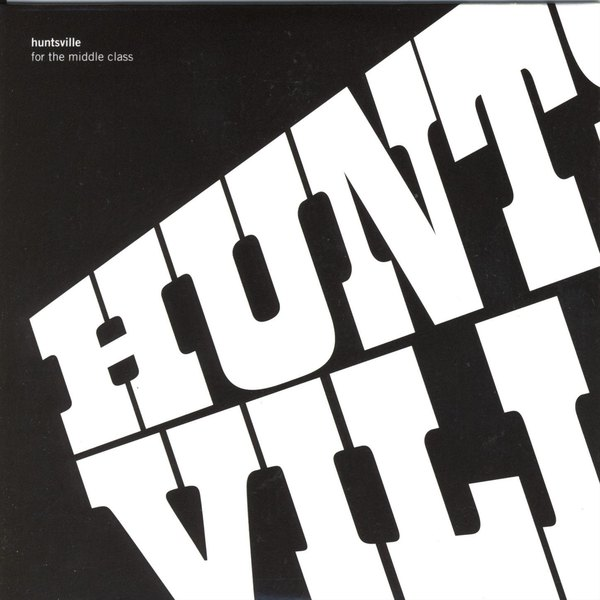
CRVI002980Kim Hiorthøy - Huntsville — For The Middle Class
2006
2006

CRVI000157Kazumasa Nagai - Exhibition of Graphic Art
Designed by Kazumasa Nagai · 1978
Designed by Kazumasa Nagai · 1978

CRVI000500Adrian Tomine - Love Life
The New Yorker, December 7, 2020 · 2020
The New Yorker, December 7, 2020 · 2020

CRVI001012 - A right angle of bars stepping into perspective
Trademark · owner not established · designer unknown
Trademark · owner not established · designer unknown

CRVI001007 - BLACK JAZZ
Trademark · owner not established · designer unknown
Trademark · owner not established · designer unknown

CRVI001764Anni Albers - Design for a Silk Tapestry
1926
1926

CRVI000033Andy Stott - Too Many Voices
Artwork by Julie Lemberger · 2016
Artwork by Julie Lemberger · 2016

CRVI002287Sarah Lucas - Nature Abhors a Vacuum
1998
1998

CRVI000839Ottagono - Ottagono 77
giugno 1985 · anno 20 · 1985
giugno 1985 · anno 20 · 1985

CRVI000567Kenneth Kajoranta - Beyond the Binary
MIT Technology Review, September/October 2022 · 2022
MIT Technology Review, September/October 2022 · 2022

CRVI001114Andrew Hill - Andrew!!!
Designed by Reid Miles · Blue Note BST 84203 · 1968
Designed by Reid Miles · Blue Note BST 84203 · 1968

CRVI000093Cabaret Voltaire - The Crackdown
Designer unknown · Virgin · 1983
Designer unknown · Virgin · 1983

CRVI000658Unknown - Jerry Seinfeld Is 58, Rich Beyond Imagination and Still Working
The New York Times Magazine, December 23, 2012 · 2012
The New York Times Magazine, December 23, 2012 · 2012

CRVI002155Robert Gober - Untitled

CRVI002139Vito Acconci - Untitled

CRVI001390Emmett McBain - True Two
Emmett McBain · Vince Cullers Advertising for Lorillard · 1968 · 1968
Emmett McBain · Vince Cullers Advertising for Lorillard · 1968 · 1968

CRVI002279John Baldessari - Two figures and a blue drawing

CRVI001078Kim Laughton - Untitled

CRVI000572Alvin Lustig - Monday Night
Kay Boyle · New Directions, New Classics NC20 · 1947
Kay Boyle · New Directions, New Classics NC20 · 1947

CRVI001517Jackson Pollock - Number 19
1948
1948

CRVI001470Aubrey Beardsley - How La Beale Isoud Wrote to Sir Tristram

CRVI000072Euglossine - Sharp Time
Designer unknown · 2017
Designer unknown · 2017

CRVI000041Kevin Harrison - Inscrutably Obvious
Designed by Obvious Products · Obvious · 1981
Designed by Obvious Products · Obvious · 1981

CRVI000929 - Two paired bars joined by a crossing stroke
Trademark · owner not established · designer unknown
Trademark · owner not established · designer unknown

CRVI001509Edward Wadsworth - Abstract Composition
1915
1915

CRVI002288Cindy Sherman - Untitled Film Still #10
1977
1977

CRVI000364The Miracles - City of Angels
Designer unknown · Tamla · 1975
Designer unknown · Tamla · 1975

CRVI001461John William Waterhouse - Dolce far Niente
1879
1879

CRVI000544Unknown - Composed
The New Yorker, September 27, 2021 · 2021
The New Yorker, September 27, 2021 · 2021

CRVI000486Philip Montgomery - The Olympics Issue
The New York Times Magazine, July 28, 2024 · 2024
The New York Times Magazine, July 28, 2024 · 2024

CRVI000616Chris Ware - Golden Opportunity
The New Yorker, March 5 2018 · 2018
The New Yorker, March 5 2018 · 2018

CRVI001208Cannonball Adderley with Bill Evans - Know What I Mean?
Photograph by Michael Cuesta · Riverside Records RLP 433 · 1961
Photograph by Michael Cuesta · Riverside Records RLP 433 · 1961

CRVI000450Derek Birdsall - Social Science and Public Policy
Cover for Martin Rein · Penguin Education · 1972
Cover for Martin Rein · Penguin Education · 1972

CRVI001660Albert Gleizes - Bermuda
1917
1917

CRVI000028Pete Swanson - Man With Potential
Designed by John Twells, Radu Prepeleac · Type · 2011
Designed by John Twells, Radu Prepeleac · Type · 2011
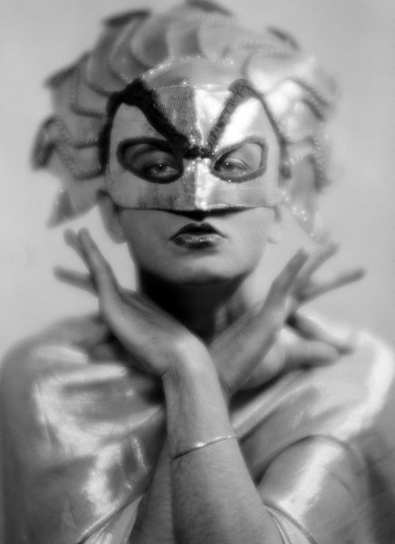
CRVI002820Laure Albin-Guillot - Untitled (woman in a metal mask)

CRVI001010BIT, Inc. - BIT
Trademark · Installation and Repair Services for Computers · Natick, Massachusetts · designer unknown · 1971
Trademark · Installation and Repair Services for Computers · Natick, Massachusetts · designer unknown · 1971

CRVI002313Neo Rauch - Marina
2014
2014

CRVI000529Robert Vargas - André 3000 Is Back!
GQ, November 2023 · 2023
GQ, November 2023 · 2023
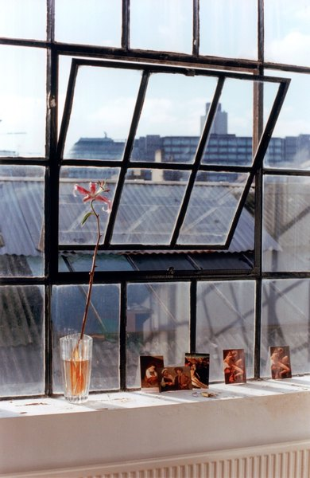
CRVI001418Unidentified - Photograph published in The New Yorker
2022
2022

CRVI001471Aubrey Beardsley - The Climax
1893
1893

CRVI000823Seymour Chwast - Seymour Poster
AIGA / NY · 56 × 86 cm · 2009
AIGA / NY · 56 × 86 cm · 2009

CRVI001050Takenobu Igarashi - Takenobu Igarashi Exhibition 2
Poster · The Museum of Modern Art, New York
Poster · The Museum of Modern Art, New York

CRVI000849form - form 266
Juli/Aug 2016 · Man/Machine · 2016
Juli/Aug 2016 · Man/Machine · 2016

CRVI000255Romuald Socha - A Faithful Woman
Film Poster Designed By Romuald Socha · 1978 · 1978
Film Poster Designed By Romuald Socha · 1978 · 1978

CRVI001911Michael Heizer - Rift #1
Jean Dry Lake, Nevada · 1968
Jean Dry Lake, Nevada · 1968

CRVI000641R. Kikuo Johnson - Commencement
The New Yorker, May 30 2016 · 2016
The New Yorker, May 30 2016 · 2016

CRVI001632Ernst Ludwig Kirchner - Wehrlin, Facing Front
1924
1924

CRVI001032Adrian Ghenie - Untitled painting
Published in Flaunt
Published in Flaunt

CRVI002453Roberto Matta - Violet field with white cubes

CRVI000324DJ Diamond - Flight Muzik
Designer unknown · Planet Mu · 2011
Designer unknown · Planet Mu · 2011
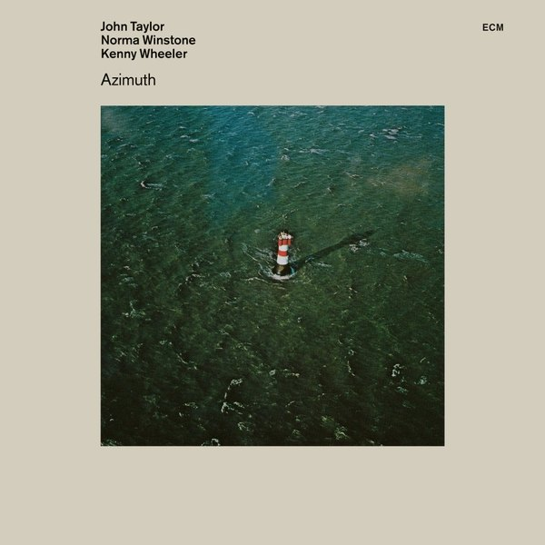
CRVI001431Barbara Wojirsch - Azimuth
Album cover · ECM 1099 · 1977
Album cover · ECM 1099 · 1977

CRVI000280Mo Kolours - Mo Kolours
Designer unknown · One-Handed Music · 2014
Designer unknown · One-Handed Music · 2014

CRVI001449Jean Dubuffet - Site habité d'objets (Site Inhabited by Objects)

CRVI002335Neo Rauch - Figures in orange and yellow before a lit interior

CRVI000755Tetsuya Ishida - Untitled
1998 · 1998
1998 · 1998
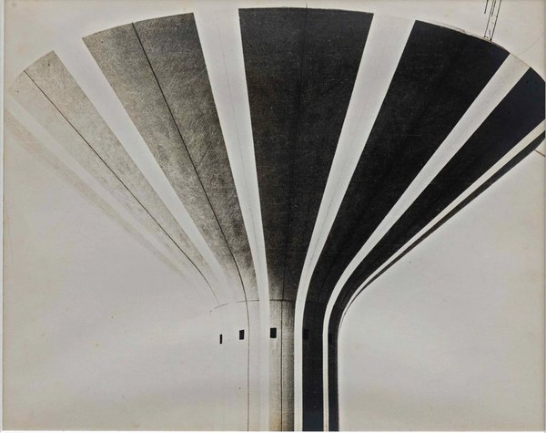
CRVI002172Nasreen Mohamedi - Untitled

CRVI000759Tetsuya Ishida - Rooftop Refugee
Acrylic on board · 145.8 × 103.3 cm · 1996
Acrylic on board · 145.8 × 103.3 cm · 1996

CRVI001089Kim Laughton - Untitled

CRVI000064Mouse On Mars - Dimensional People
Designer unknown · Thrill Jockey · 2018
Designer unknown · Thrill Jockey · 2018
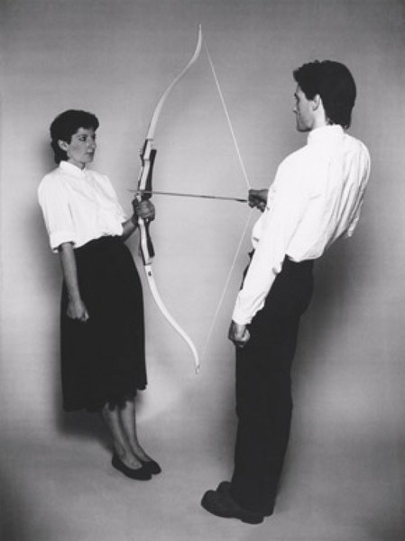
CRVI001953Marina Abramović and Ulay - Rest Energy

CRVI000363Billy Paul - 360 Degrees of Billy Paul
Designer unknown · Philadelphia International · 1972
Designer unknown · Philadelphia International · 1972

CRVI002190René Magritte - The Dawn of Cayenne
1926
1926

CRVI000074F.C. Judd - Electronics Without Tears
Designer unknown · Public Information · 2012
Designer unknown · Public Information · 2012

CRVI000671Gail Bichler, Kathy Ryan, JR - Madonna at 60
The New York Times Magazine, June 9, 2019 · 2019
The New York Times Magazine, June 9, 2019 · 2019

CRVI002578Howlin' Wolf - The Real Folk Blues
1966
1966

CRVI001883Michelangelo Pistoletto - Venus of the Rags
1967
1967

CRVI001368Teddy Charles - Collaboration West
Designed by Reid Miles · Prestige 7028 · 1957
Designed by Reid Miles · Prestige 7028 · 1957

CRVI001969Lorna Simpson - Head on Ice #2
2016
2016

CRVI002120Alice Neel - Kenneth Doolittle
1931
1931

CRVI002348René Magritte - The Son of Man (Le fils de l'homme)
1964
1964

CRVI001446Unidentified - Secession 1897–1905
Poster
Poster

CRVI002042Christopher Wool - Felix

CRVI001102Georges Seurat - Models (Poseuses)
Oil on canvas, 200 × 249.9 cm · The Barnes Foundation, Philadelphia · 1886–1888
Oil on canvas, 200 × 249.9 cm · The Barnes Foundation, Philadelphia · 1886–1888

CRVI002058Christina Quarles - How in tha Light of One Night
2023
2023

CRVI000222Yayoi Kusama - Kusama with her stuffed fabric works
Photograph by Evelyn Hofer · among the sewn phalluses of her room-filling installations · 1964
Photograph by Evelyn Hofer · among the sewn phalluses of her room-filling installations · 1964

CRVI001819Unidentified - Wave pattern in black and white

CRVI002449Roberto Matta - Grey field with red mechanical figures

CRVI001343unattributed - Portrait poster with coloured discs
Maker unidentified
Maker unidentified

CRVI000530Tom Alberty - Worth Less
New York, July 17-30, 2023 · 2023
New York, July 17-30, 2023 · 2023

CRVI001822Bridget Riley - The Responsive Eye
1965
1965

CRVI001211Bill Evans Trio - On A Friday Evening
Designed by Christopher Leckie, photograph by Jerome Knill, Phil Bray, Scott Lyons · Craft Recordings CR00301 · 2021
Designed by Christopher Leckie, photograph by Jerome Knill, Phil Bray, Scott Lyons · Craft Recordings CR00301 · 2021

CRVI000516Unknown - Erykah the Almighty
The Cut, September 11-24, 2023 · 2023
The Cut, September 11-24, 2023 · 2023

CRVI002334Neo Rauch - Framed portrait of a man with a small dark figure

CRVI000638Tomer Hanuka - Take the L Train
The New Yorker, April 11 2016 · 2016
The New Yorker, April 11 2016 · 2016

CRVI001535David Alfaro Siqueiros - Self-Portrait
1936
1936

CRVI001127Donald Byrd - A New Perspective
Designed by Reid Miles · Blue Note BLP 4124 · 1964
Designed by Reid Miles · Blue Note BLP 4124 · 1964
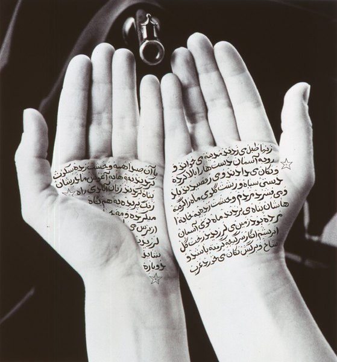
CRVI002008Shirin Neshat - Guardians of Revolution

CRVI000259Ryszard Kaja - Dachshund in Films
Poster
Poster

CRVI002119Alice Neel - Ginny with the Yellow Hat
1971
1971

CRVI000434Feist - The Reminder (Deluxe Version)
Designer unknown · Polydor · 2007
Designer unknown · Polydor · 2007

CRVI002293Cindy Sherman - Untitled Film Still #45
1979
1979

CRVI000521Robert Vargas - Pharrell Descends on Paris
GQ, September 2023 · 2023
GQ, September 2023 · 2023

CRVI002187René Magritte - Midnight Marriage
1926
1926

CRVI000726Oneohtrix Point Never - Magic Oneohtrix Point Never
Front cover · designed by Robert Beatty · Warp Records · 2020
Front cover · designed by Robert Beatty · Warp Records · 2020

CRVI001581Ralston Crawford - Torn election poster (Buckley)

CRVI000536Gail Bichler - The Age of Ishiguro
The New York Times Magazine, February 28, 2021 · 2021
The New York Times Magazine, February 28, 2021 · 2021

CRVI001950Yayoi Kusama - Kusama in a Foreign Country

CRVI001364Herbie Nichols Trio - Herbie Nichols Trio
Designed by Reid Miles, photograph by Francis Wolff · Blue Note 1519 · 1956
Designed by Reid Miles, photograph by Francis Wolff · Blue Note 1519 · 1956

CRVI002479Típica 73 - Into the 80's
1981
1981

CRVI002689Noriaki Yokosuka - 12 Graphistes Japonais: Tradition et Nouvelles Techniques
1984
1984

CRVI002253Claes Oldenburg - Shoestring Potatoes Spilling from a Bag
1966
1966

CRVI001087Kim Laughton - Untitled

CRVI001857Unidentified - Lamplit embankment with crowds

CRVI001922Ana Mendieta - Untitled (earth-body work)

CRVI000323Flying Lotus - Cosmogramma
Designer unknown · Warp · 2010
Designer unknown · Warp · 2010

CRVI001647Pablo Picasso - Head of a Woman: Madeleine
1905, printed 1913
1905, printed 1913

CRVI001742Rudolf Schlichter - Sie starb daran

CRVI000279Wiktor Sadowski - Candide, or Optimism
Theatre Poster · 1986 · 1986
Theatre Poster · 1986 · 1986

CRVI002038Tauba Auerbach - Untitled

CRVI002308Carrie Mae Weems - Untitled, from The Kitchen Table Series
1990
1990

CRVI002068Adrián Villar Rojas - Sculpture on a floating plinth

CRVI002230László Moholy-Nagy - Bauhausbücher 5: Piet Mondrian, Neue Gestaltung
1925
1925

CRVI001820Bridget Riley - Movement in Squares

CRVI002440Zeke Clough - Black-and-white boulder of coiled forms

CRVI001947Ai Weiwei - Forever Bicycles
2011
2011

CRVI000590Unknown - Diary of a Suburban Rabbi
New York, January 18, 1971 · 1971
New York, January 18, 1971 · 1971

CRVI001945Unidentified - Suspended horse

CRVI001256unattributed - Alice Coltrane, studio portrait
Photographer unidentified
Photographer unidentified

CRVI001991Toyin Ojih Odutola - As He Watched Him Walk Away
Detail · 2020
Detail · 2020

CRVI001439Unidentified - Wall-covering design

CRVI001167Michel Petrucciani - Live
Designed by Patrick Roques · Blue Note CDP 7 95480 2 · 1991
Designed by Patrick Roques · Blue Note CDP 7 95480 2 · 1991

CRVI001776Kazuo Shiraga - Funsyutu
1997
1997

CRVI001654Juan Gris - Portrait of the Artist's Mother
1912
1912

CRVI001455Martine Bedin - Cucumber
Vase · Memphis · 1985
Vase · Memphis · 1985

CRVI002005Doris Salcedo - Installation of branches
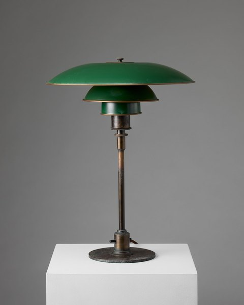
CRVI002725Poul Henningsen - PH 3/2 table lamp

CRVI002207Wassily Kandinsky - Improvisation 28 (second version)
1912
1912
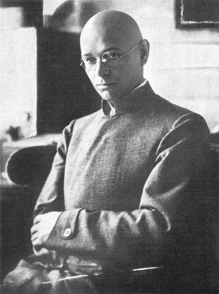
CRVI002241unattributed - Johannes Itten

CRVI000314Underworld - Dubnobasswithmyheadman
Designer unknown · Junior Boy's Own · 1994
Designer unknown · Junior Boy's Own · 1994
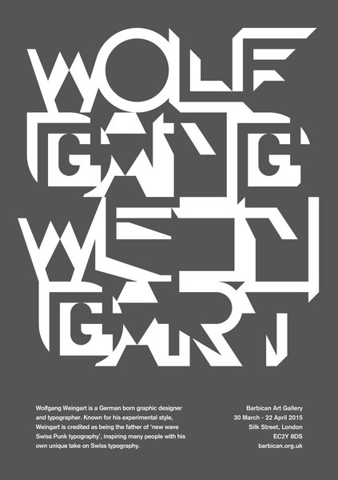
CRVI002804Unattributed - Wolfgang Weingart, Barbican Art Gallery
2015
2015

CRVI002225László Moholy-Nagy - Oskar Schlemmer in Ascona
1926
1926
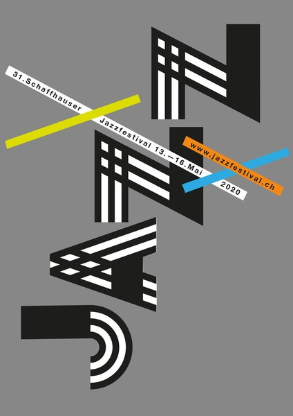
CRVI002859Rosmarie Tissi - 31. Schaffhauser Jazzfestival
2020
2020

CRVI000134Shigeo Fukuda - Shigeo Fukuda
Exhibition, Keio Department Store SF Art Gallery, 23–28 May 1975 · 1975
Exhibition, Keio Department Store SF Art Gallery, 23–28 May 1975 · 1975

CRVI001803Roy Lichtenstein - Okay Hot-Shot, Okay!
1963
1963
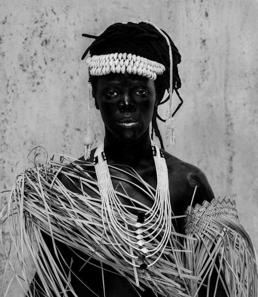
CRVI001999Zanele Muholi - Self-portrait

CRVI001593John Baeder - Market Tower
2007
2007

CRVI001616Charles Rennie Mackintosh - Décor de la salle à manger, House for an Art Lover, Glasgow
1901
1901

CRVI000099Joel Vandroogenbroeck - Computer Blossoms
Designer unknown · Coloursound Library · 1981
Designer unknown · Coloursound Library · 1981

CRVI002132Carolee Schneemann - Untitled

CRVI002149Barbara Kruger - Untitled (You kill time)

CRVI000166Soft Machine - Seven
Designed by Roslav Szaybo · CBS 65799 · 1973
Designed by Roslav Szaybo · CBS 65799 · 1973

CRVI001577Charles Sheeler - Self-Portrait
1923
1923

CRVI001278The Lawrence Marable Quartet featuring James Clay - Tenorman
Designer unrecorded · Jazz West JWLP-8 · 1956
Designer unrecorded · Jazz West JWLP-8 · 1956

CRVI001600Charles Angrand - Head of a Child (Emmanuel)
1898
1898

CRVI000163Kazumasa Nagai - World Design Expo '89 - Nagoya
Designed by Kazumasa Nagai · 1989
Designed by Kazumasa Nagai · 1989
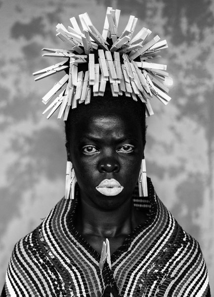
CRVI002002Zanele Muholi - Self-portrait with clothespin headdress

CRVI002454Roberto Matta - Grey ground with orange figures
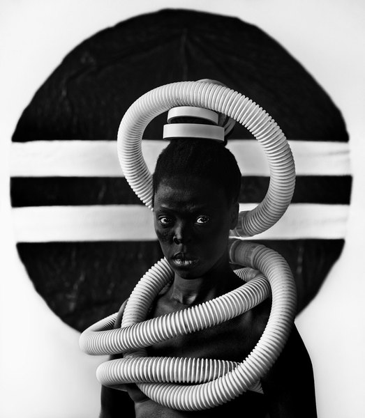
CRVI002000Zanele Muholi - Self-portrait with tubing

CRVI002268unattributed - Yoko Ono holding a glass sphere

CRVI001949Unidentified - Chandelier, Copenhagen Opera House

CRVI000409Whodini - Escape
Designer unknown · Jive · 1984
Designer unknown · Jive · 1984

CRVI001029Adrian Ghenie - Untitled painting
Oil on canvas · Pace Gallery
Oil on canvas · Pace Gallery

CRVI002067Adrián Villar Rojas - Sculptures at the water's edge

CRVI001152unattributed - John Coltrane playing into a dressing-room mirror
Photographer unidentified · c. 1964
Photographer unidentified · c. 1964

CRVI002291Cindy Sherman - Untitled Film Still #21
1979
1979

CRVI001655Juan Gris - Portrait of Germaine Raynal
1912
1912

CRVI002418Gustav Klutsis - Self-portrait with a camera
1926
1926

CRVI001965Glenn Ligon - Static 2
2023
2023

CRVI001015Édouard Manet - Le Fifre (The Fifer)
Oil on canvas · Musée d'Orsay, Paris · 1866
Oil on canvas · Musée d'Orsay, Paris · 1866
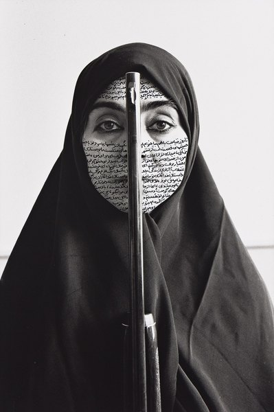
CRVI002009Shirin Neshat - Rebellious Silence

CRVI002112Roman Opałka - Z wnętrza
1969
1969

CRVI001669María Blanchard - La Comulgante (Girl at Her First Communion)
1914
1914

CRVI001464John William Waterhouse - Diogenes
1882
1882

CRVI002019Zhang Xiaogang - Bloodline Series: Big Family Series
2006
2006

CRVI000600Unknown - When Was the Last Time You Called Your Mother?
New York, May 7, 1979 · 1979
New York, May 7, 1979 · 1979

CRVI000431Camera Obscura - Underachievers Please Try Harder
Designer unknown · Elefant Records · 2003
Designer unknown · Elefant Records · 2003

CRVI001665Robert Delaunay - Champs de Mars: The Red Tower
1911/23
1911/23

CRVI001590John Baeder - John's Diner
2007
2007

CRVI001650Juan Gris - Portrait of Pablo Picasso
January–February 1912
January–February 1912

CRVI000155Red Garland Trio - Groovy
Designed by Reid Miles · Prestige 7113 · 1957
Designed by Reid Miles · Prestige 7113 · 1957

CRVI001207Thelonious Monk - The Complete Riverside Recordings
Designer unrecorded · Riverside Records RCD-022-2 · 1986
Designer unrecorded · Riverside Records RCD-022-2 · 1986

CRVI000300I Start Counting - Fused
Designer unknown · Mute · 1988
Designer unknown · Mute · 1988

CRVI002159Robert Mapplethorpe - Irises
1986
1986

CRVI002203Fernand Léger - The Staircase
1914
1914

CRVI000273Andrzej Krauze - Camera Buff
Film Poster · 1979 · 1979
Film Poster · 1979 · 1979

CRVI001323Peter Lloyd - Untitled airbrush illustration
Illustration by Peter Lloyd
Illustration by Peter Lloyd

CRVI000251Wiesław Wałkuski - Scruple
Film Poster Designed By Wiesław Wałkuski · 2000 · 2000
Film Poster Designed By Wiesław Wałkuski · 2000 · 2000

CRVI000610Unknown - The Coming Republican Crack-Up
New York, March 4, 1996 · 1996
New York, March 4, 1996 · 1996

CRVI000751Tetsuya Ishida - Exercise Equipment
Acrylic on board · 103 × 145.6 cm · 1997
Acrylic on board · 103 × 145.6 cm · 1997
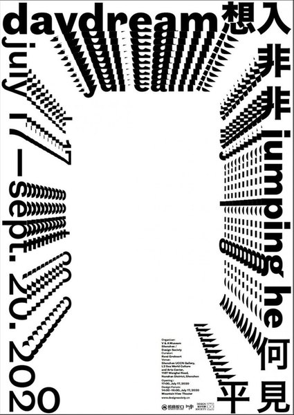
CRVI002958Jianping He - daydream
2025
2025

CRVI001526Walker Evans - Alabama Cotton Tenant Farmer's Wife
1936, printed c. 1962
1936, printed c. 1962

CRVI000872Phil & The Blanks - Phil & The Blanks
Designed by Art Hotel, Christopher Whorf, Mac James, photograph by Alec R. Costandinos · Ibis ARC 12510 · 1980
Designed by Art Hotel, Christopher Whorf, Mac James, photograph by Alec R. Costandinos · Ibis ARC 12510 · 1980

CRVI000462Richard Turley - The Freewheelin' Ben Bernanke
Bloomberg Businessweek, 6 August 2012 · illustration by David Parkins · 2012
Bloomberg Businessweek, 6 August 2012 · illustration by David Parkins · 2012

CRVI001115Andrew Hill - Compulsion!!!!!
Designed by Reid Miles · Blue Note BST 84217 · 1967
Designed by Reid Miles · Blue Note BST 84217 · 1967

CRVI000996 - HAIR
Trademark · owner not established · designer unknown
Trademark · owner not established · designer unknown

CRVI001723František Kupka - Self-Portrait with Wife
1908
1908

CRVI001658Albert Gleizes - Football Players
1912
1912

CRVI002204Fernand Léger - Houses in the Trees (Landscape No. 3)
1914
1914

CRVI002352René Magritte - The Intimate Friend (L'ami intime)
1958
1958

CRVI001910Adrian Piper - Catalysis IV
1970
1970

CRVI001670Umberto Boccioni - Self-Portrait
1905
1905

CRVI002551CeCe Peniston - Finally
1991
1991

CRVI002126Jack Whitten - Untitled

CRVI002162Mira Schendel - Untitled

CRVI001130Freddie Hubbard - Hub-Tones
Designed by Reid Miles, photograph by Francis Wolff · Blue Note BLP 4115 · 1962
Designed by Reid Miles, photograph by Francis Wolff · Blue Note BLP 4115 · 1962

CRVI002095Frank Auerbach - Head of Paula Eyles
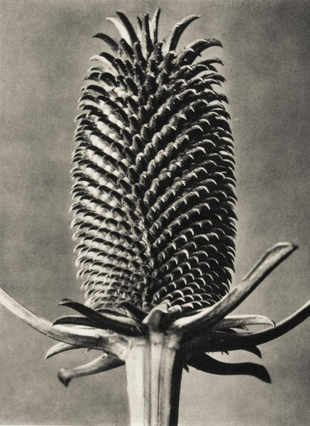
CRVI002819Karl Blossfeldt - Untitled (teasel)

CRVI001656Juan Gris - Man in the Café
1912
1912

CRVI000422Trick Daddy - www.thug.com
Designer unknown · Slip-N-Slide · 1998
Designer unknown · Slip-N-Slide · 1998

CRVI000746Emahoy Tsege Mariam Gebru - Emahoy Tsege Mariam Gebru
Album cover · designed by Sam Wenc
Album cover · designed by Sam Wenc

CRVI001034Adrian Ghenie - Untitled painting
Published in Interview
Published in Interview

CRVI001172Sonny Clark - Cool Struttin'
Designed by Reid Miles, photograph by Francis Wolff · Blue Note BLP 1588 · 1958
Designed by Reid Miles, photograph by Francis Wolff · Blue Note BLP 1588 · 1958

CRVI001895Joseph Kosuth - Text/Context
1979
1979

CRVI000419KMD - Mr. Hood
Designer unknown · Elektra · 1991
Designer unknown · Elektra · 1991

CRVI000355Isaac Hayes - ...To Be Continued
Designer unknown · Enterprise · 1970
Designer unknown · Enterprise · 1970

CRVI001651Juan Gris - Portrait of Maurice Raynal
1911
1911

CRVI001868Dan Flavin - "monument" for V. Tatlin
1964
1964

CRVI000752Tetsuya Ishida - Awakening
1998 · 1998
1998 · 1998

CRVI001272Jimmy Smith - Softly As A Summer Breeze
Designed by Reid Miles, photograph by Jean-Pierre Leloir · Blue Note 4200 · 1965
Designed by Reid Miles, photograph by Jean-Pierre Leloir · Blue Note 4200 · 1965

CRVI000010Flying Lotus - Los Angeles
Artwork by Commonwealth · Warp Records
Artwork by Commonwealth · Warp Records

CRVI001180Wayne Shorter - Speak No Evil
Designed by Reid Miles · Blue Note BLP 4194 · 1966
Designed by Reid Miles · Blue Note BLP 4194 · 1966

CRVI001968Lorna Simpson - Untitled

CRVI002302Carrie Mae Weems - Untitled (Woman and daughter with makeup)
1990
1990

CRVI001024Gustave Courbet - Les Demoiselles des bords de la Seine (été)
Oil on canvas, 174 × 206 cm · Petit Palais, Paris · 1856–1857
Oil on canvas, 174 × 206 cm · Petit Palais, Paris · 1856–1857

CRVI002300Kerry James Marshall - Untitled (Painter)

CRVI000866Julian Stanczak - Solar
Oil on plastic · 91.4 × 91.4 cm · 1972
Oil on plastic · 91.4 × 91.4 cm · 1972

CRVI000304Cabaret Voltaire - The Voice Of America
Designer unknown · Rough Trade · 1980
Designer unknown · Rough Trade · 1980

CRVI000154Mal Waldron - Mal-1
Designed by Reid Miles · Prestige LP 7090 · 1956
Designed by Reid Miles · Prestige LP 7090 · 1956

CRVI001071David Rudnick - Poster for Pure Halloween — Dave P, Zillas on Acid, Greg D, Steve Vena
Poster · 2017
Poster · 2017

CRVI000565Thomas Alberty - Reasons to Love New York
New York, December 5-18, 2022 · 2022
New York, December 5-18, 2022 · 2022

CRVI002306Carrie Mae Weems - Untitled (Woman standing alone)
1990
1990

CRVI001027Adrian Ghenie - Charles Darwin as a young man
Oil on canvas, 49 × 32.5 × 4.5 cm · 2014
Oil on canvas, 49 × 32.5 × 4.5 cm · 2014

CRVI001020Gustave Courbet - Le Désespéré (The Desperate Man)
Oil on canvas, 45 × 54 cm · Private collection · 1843–1845
Oil on canvas, 45 × 54 cm · Private collection · 1843–1845

CRVI000438John McConnell - The Concept of Mind
Cover for Gilbert Ryle · Penguin University Books
Cover for Gilbert Ryle · Penguin University Books
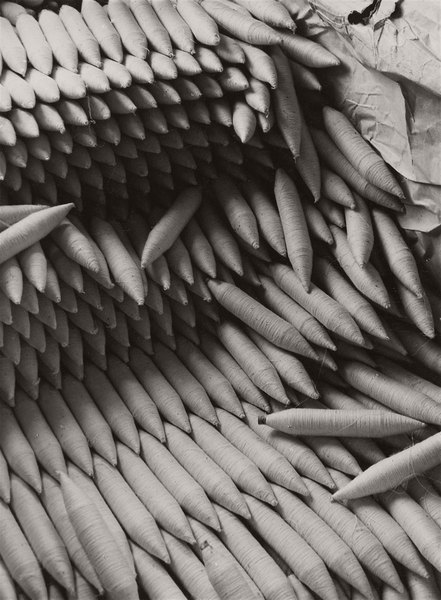
CRVI002821Albert Renger-Patzsch - Untitled (rope and cordage)

CRVI002078Christian Schad - Figure in a paper hat

CRVI002035Unidentified - Numbers over a grid
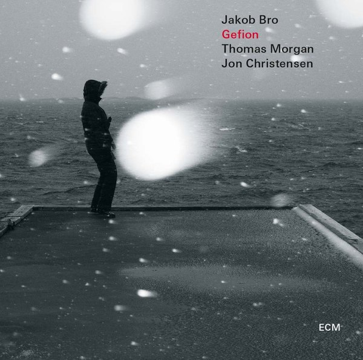
CRVI001430Sascha Kleis - Gefion
Album cover · ECM 2381 · 2015
Album cover · ECM 2381 · 2015

CRVI001704Wassily Kandinsky - Couple Riding
1906
1906

CRVI000750Tetsuya Ishida - Supermarket
Acrylic on board · 103 × 145.6 cm · 1996
Acrylic on board · 103 × 145.6 cm · 1996

CRVI000265Roman Cieślewicz - Theater Wspolczesny in Wroclaw Invites
Theatre Poster · 1975 · 1975
Theatre Poster · 1975 · 1975

CRVI000081Mort Garson - Didn’t You Hear?
Designer unknown · Custom Fidelity · 1970
Designer unknown · Custom Fidelity · 1970

CRVI001308Lee Morgan - The Procrastinator
Designed by Patrick Roques, photograph by Francis Wolff · Blue Note LT-1044 · 1978
Designed by Patrick Roques, photograph by Francis Wolff · Blue Note LT-1044 · 1978

CRVI001219Mati Klarwein - Untitled
Painting · plate P21-vol2-94 on the artist's own site
Painting · plate P21-vol2-94 on the artist's own site

CRVI000027Cevdet Erek - Davul
Designed by John Coulthart · 2017
Designed by John Coulthart · 2017

CRVI000753Tetsuya Ishida - Refuel Meal
1996 · 1996
1996 · 1996

CRVI000774George Giusti - Prevent Forest Fires! Crush Out Your Cigarette
U.S. Forest Service · 1945
U.S. Forest Service · 1945

CRVI000353Betty Davis - Betty Davis
Designer unknown · Just Sunshine · 1973
Designer unknown · Just Sunshine · 1973

CRVI000386Conrad Schnitzler - Con
Designer unknown · Egg · 1978
Designer unknown · Egg · 1978

CRVI001299Blossom Dearie - Blossom Dearie
Photograph by Chuck Stewart · Verve Records MG V-2037 · 1957
Photograph by Chuck Stewart · Verve Records MG V-2037 · 1957

CRVI001738Kirill Zdanevich - Composition with Cyrillic lettering

CRVI002188René Magritte - The Face of Genius
1926
1926

CRVI001255unattributed - Bill Evans, hands behind his head
Photographer unidentified
Photographer unidentified

CRVI000672Magnus Berger, Jennifer Pastore, Ethan James Green - The Innovators Issue
WSJ. Magazine, November 2019 · 2019
WSJ. Magazine, November 2019 · 2019

CRVI000236Kruder & Dorfmeister - G-Stoned
Designer unknown · G-Stone Recordings · 1993
Designer unknown · G-Stone Recordings · 1993

CRVI002719Eiko Ishioka - Untitled (five heads)

CRVI001779Unidentified - Saburō Murakami passing through paper screens, 2nd Gutai Exhibition, Tokyo
1956
1956

CRVI001924Ana Mendieta - Imagen de Yagul
Silueta series · 1973
Silueta series · 1973

CRVI000757Tetsuya Ishida - Gripe
Acrylic on canvas mounted on board · 42.2 × 59.4 cm · 1997
Acrylic on canvas mounted on board · 42.2 × 59.4 cm · 1997

CRVI000455Jim Stoddart - Billion Dollar Brain
Cover for Len Deighton · Penguin · 2021
Cover for Len Deighton · Penguin · 2021

CRVI001248Mati Klarwein - Untitled
Painting · plate R02-vol3-15 on the artist's own site · 1983
Painting · plate R02-vol3-15 on the artist's own site · 1983

CRVI002196Pablo Picasso - Academical Study

CRVI002122Alice Neel - Dominican Boys on 108th Street
1955
1955

CRVI000381Joel Vandroogenbroeck, Mac Prindy & Marc Monsen - Biomechanoid
Designer unknown · Sofoursound Library · 1980
Designer unknown · Sofoursound Library · 1980

CRVI001988Njideka Akunyili Crosby - Nkem

CRVI001458William Morris - Strawberry Thief
Textile · c. 1936
Textile · c. 1936

CRVI002299Kerry James Marshall - The Academy
2012
2012

CRVI001778Unidentified - Black and yellow impasto composition

CRVI002460Eric Yahnker - Factory Reset

CRVI000703C.A. Wisely - Pi
Hand-painted Ghanaian film poster
Hand-painted Ghanaian film poster

CRVI002144Richard Prince - Untitled (car hood)

CRVI000533Gail Bichler - The American Abyss
The New York Times Magazine, January 17, 2021 · 2021
The New York Times Magazine, January 17, 2021 · 2021

CRVI000080Karen Gwyer - Needs Continuum
Designer unknown · No Pain In Pop · 2013
Designer unknown · No Pain In Pop · 2013

CRVI000532Thomas Alberty - 3 Wednesdays in America
New York, January 18-31, 2021 · 2021
New York, January 18-31, 2021 · 2021

CRVI001480Henri de Toulouse-Lautrec - May Belfort
1895
1895

CRVI001604John William Waterhouse - Circe Offering the Cup to Odysseus
1891
1891

CRVI001518Franz Kline - Chief
1950
1950

CRVI000164Colosseum II - Electric Savage
Designed by John Pasche · MCA MCF2800 · 1977
Designed by John Pasche · MCA MCF2800 · 1977

CRVI000707C.A. Wisely - La Haine
Hand-painted Ghanaian film poster
Hand-painted Ghanaian film poster

CRVI001035Adrian Ghenie - The Flirt
Oil on canvas, 250 × 220 cm · Galerie Judin, Berlin · 2021
Oil on canvas, 250 × 220 cm · Galerie Judin, Berlin · 2021

CRVI001596Georges Seurat - At the Concert Parisien
1887–88
1887–88

CRVI002337Neo Rauch - Der blaue Fisch

CRVI001508Edward Wadsworth - Illustration (Typhoon)
1914–1915
1914–1915

CRVI001336Hawkwind - Space Ritual — inner sleeve
Maker unidentified · United Artists · 1973
Maker unidentified · United Artists · 1973

CRVI001148Jimmy Smith - A New Sound... A New Star... Jimmy Smith At The Organ Volume 2
Designed by Reid Miles, photograph by Francis Wolff · Blue Note BLP 1514 · 1956
Designed by Reid Miles, photograph by Francis Wolff · Blue Note BLP 1514 · 1956

CRVI001412Giorgio de Chirico - The Uncertainty of the Poet
Giorgio de Chirico · 1913 · oil on canvas · Tate · 1913
Giorgio de Chirico · 1913 · oil on canvas · Tate · 1913

CRVI000767Paula Scher - Simpatico
The Public Theater · 1994
The Public Theater · 1994

CRVI000322Skream - Skream!
Designer unknown · Tempa · 2006
Designer unknown · Tempa · 2006

CRVI001768Le Corbusier - Still Life
1920
1920

CRVI000758Tetsuya Ishida - Hothouse
Onshitsu · acrylic and oil on canvas · 72.6 × 90.9 cm · 2003
Onshitsu · acrylic and oil on canvas · 72.6 × 90.9 cm · 2003

CRVI001726František Kupka - Reminiscence of a Cathedral
1920/23
1920/23

CRVI002339Neo Rauch - Figures before a white gabled house

CRVI001156Kenny Burrell & John Coltrane - Kenny Burrell & John Coltrane
Designed by Don Schlitten, artwork by Stylianos Gianakos · New Jazz NJLP 8276 · 1963
Designed by Don Schlitten, artwork by Stylianos Gianakos · New Jazz NJLP 8276 · 1963

CRVI000643Chin Wang, Javier Jaen - The Genius of Bill Belichick
ESPN The Magazine, October 17 2016 · 2016
ESPN The Magazine, October 17 2016 · 2016

CRVI001754László Moholy-Nagy - Berlin Radio Tower
1928
1928

CRVI001174Thelonious Monk - At The Five Spot
Artwork by Phil Carroll, photograph by Jim Marshall · Milestone M-47043 · 1977
Artwork by Phil Carroll, photograph by Jim Marshall · Milestone M-47043 · 1977

CRVI001391Emmett McBain - The Playboy Jazz All-Stars
Designed by Emmett McBain · Playboy Records · 1957 · 1957
Designed by Emmett McBain · Playboy Records · 1957 · 1957

CRVI000024The Caretaker - An Empty Bliss Beyond This World
Artwork by Ivan Seal · History Always Favours The Winners · 2011
Artwork by Ivan Seal · History Always Favours The Winners · 2011
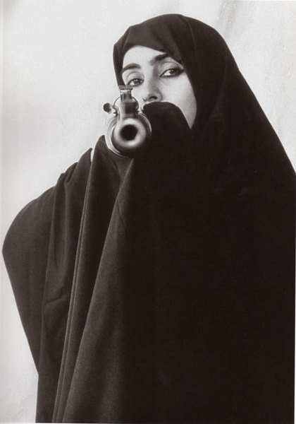
CRVI002010Shirin Neshat - Untitled (Aim)

CRVI001940Mat Collishaw - All Things Fall
Detail · 2014–2017
Detail · 2014–2017

CRVI001459William Morris - Kennet
Textile · c. 1920
Textile · c. 1920

CRVI000627Unknown - It's Not Easy Being Mark Zuckerberg Right Now
Bloomberg Businessweek, September 25, 2017 · 2017
Bloomberg Businessweek, September 25, 2017 · 2017

CRVI002307Carrie Mae Weems - Untitled, from The Kitchen Table Series
1990
1990

CRVI001797Robert Rauschenberg - Monogram
1955
1955

CRVI000113Kiyoshi Awazu - La Chinoise
Japanese poster for the first Japanese release of Godard's film · Athos · 1967
Japanese poster for the first Japanese release of Godard's film · Athos · 1967

CRVI002073Christian Schad - Portrait of Dr. Haustein

CRVI002292Cindy Sherman - Untitled Film Still #23
1979
1979

CRVI000369The Deele - Eyes Of A Stranger
Designer unknown · Solar · 1987
Designer unknown · Solar · 1987

CRVI001909Adrian Piper - Catalysis III
1970
1970

CRVI001376Max Roach - Deeds, Not Words
Designed by Paul Bacon, photograph by Lawrence N. Shustak · Riverside 12-280 · 1958
Designed by Paul Bacon, photograph by Lawrence N. Shustak · Riverside 12-280 · 1958

CRVI002396Bruce Nauman - Leaping Foxes
2018
2018

CRVI001298Lee Morgan - Here's Lee Morgan
Photograph by Chuck Stewart · Vee-Jay LP 3007 · 1960
Photograph by Chuck Stewart · Vee-Jay LP 3007 · 1960

CRVI002254unattributed - Claes Oldenburg in The Store
1961
1961

CRVI000514Chris Nosenzo - Will It Ever End?
Bloomberg Businessweek, February 20, 2023 · 2023
Bloomberg Businessweek, February 20, 2023 · 2023

CRVI000501Leo Jung - The Lucrative, Largely Unregulated, and Widely Misunderstood World of Vaping
The California Sunday Magazine, February 2, 2020 · 2020
The California Sunday Magazine, February 2, 2020 · 2020

CRVI001928Anselm Kiefer - Urd, Verdandi, Skuld (The Norns)
1983
1983

CRVI001205Bill Evans Trio - Portrait In Jazz
Designed by Harris Lewine, Ken Braren, Paul Bacon, photograph by Melvin Sokolsky · Riverside Records RLP 12-315 · 1960
Designed by Harris Lewine, Ken Braren, Paul Bacon, photograph by Melvin Sokolsky · Riverside Records RLP 12-315 · 1960

CRVI001972Carrie Mae Weems - Untitled (Playing harmonica)
1990
1990
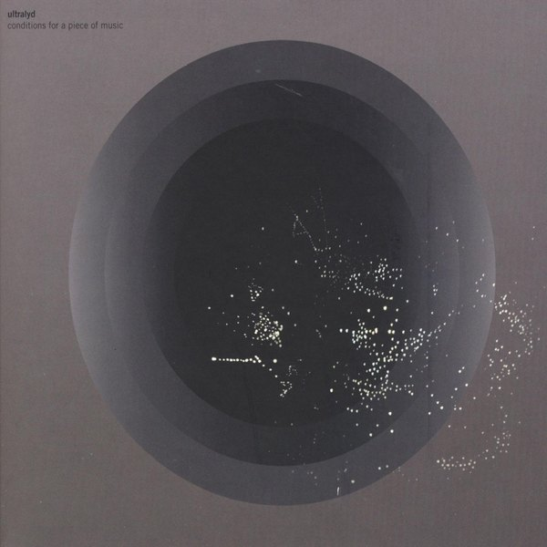
CRVI002874Kim Hiorthøy - Ultralyd — Conditions For A Piece Of Music
2007
2007

CRVI000326NHK'Koyxen - Dance Classics Vol.I
Designer unknown · Pan · 2012
Designer unknown · Pan · 2012

CRVI001929Anselm Kiefer - Interior
1981
1981

CRVI002487Eddie Palmieri - Superimposition
1970
1970

CRVI001571Christian Schad - Agosta the Pigeon-Chested Man and Rasha the Black Dove
1929
1929

CRVI002007Shirin Neshat - Unveiling

CRVI002200Marcel Duchamp - Chocolate Grinder, No. 1
1913
1913

CRVI002466Eric Yahnker - Abe Lincorn
2015
2015

CRVI001585Preston Dickinson - Still Life
c. 1924
c. 1924

CRVI000722Oh Sees - A Weird Exits
Designed by Robert Beatty · 2016
Designed by Robert Beatty · 2016

CRVI001346Lynn Goldsmith - Woman in a striped jumpsuit on a first-aid box
Photographer unidentified
Photographer unidentified

CRVI000710Tame Impala - Currents
Designed by Robert Beatty · Modular Recordings · 2015
Designed by Robert Beatty · Modular Recordings · 2015

CRVI000642Luke Hayman, Shigeto Akiyama, Annabel Mehran - Yentl 4Eva
Tablet Magazine, Fall 2016 · 2016
Tablet Magazine, Fall 2016 · 2016

CRVI002350René Magritte - The False Mirror (Le faux miroir)
1929
1929

CRVI002333Neo Rauch - Stille Reserve
2024
2024

CRVI001913James Turrell - Pullen (White)
1967
1967

CRVI000173Sonny Rollins - Work Time
Designer unknown · Prestige LP 7020 · 1955
Designer unknown · Prestige LP 7020 · 1955

CRVI002304Carrie Mae Weems - Untitled, from The Kitchen Table Series
1990
1990

CRVI002314Neo Rauch - Untitled

CRVI000412Heavy D & The Boyz - Peaceful Journey
Designer unknown · Uptown · 1991
Designer unknown · Uptown · 1991

CRVI001602Albert Dubois-Pillet - Portrait of Monsieur Pool
1887
1887

CRVI001016Édouard Manet - The Melon
Oil on canvas, 32.6 × 44.1 cm · National Gallery of Victoria, Melbourne · c. 1880
Oil on canvas, 32.6 × 44.1 cm · National Gallery of Victoria, Melbourne · c. 1880

CRVI001289The Prestige All Stars - All Day Long
Designer unrecorded · Prestige 7081 · 1957
Designer unrecorded · Prestige 7081 · 1957

CRVI000114Yusaku Kamekura - Tokyo 1964 — Butterfly Swimmer
Official poster, Games of the XVIII Olympiad · photograph Osamu Hayasaki · photo direction Jo Murakoshi · 1964
Official poster, Games of the XVIII Olympiad · photograph Osamu Hayasaki · photo direction Jo Murakoshi · 1964

CRVI001202Mati Klarwein - Untitled
Painting · plate R16-vol3-56 on the artist's own site
Painting · plate R16-vol3-56 on the artist's own site

CRVI001605John William Waterhouse - The Charmer
1911
1911

CRVI001349unattributed - Patti Smith with a camera, and Lynn Goldsmith
Photographer unidentified
Photographer unidentified

CRVI001724František Kupka - Autumn Sun — Three Goddesses
1906
1906

CRVI001347unattributed - Tron — concept art, the throne
Maker unidentified · 1982
Maker unidentified · 1982

CRVI002327Jerry McMillan - Ed Ruscha with six of his books on his head
1970
1970

CRVI000070Pierre Henry - Mise En Musique Du Corticalart De Roger Lafosse
Designer unknown · Philips · 1971
Designer unknown · Philips · 1971

CRVI000043Raime - Quarter Turns Over A Living Line
Designed by Oliver Smith · 2012
Designed by Oliver Smith · 2012

CRVI001060Ingo Swann - Cosmic painting

CRVI001813Richard Hamilton - Swingeing London 67 (f)
1969
1969
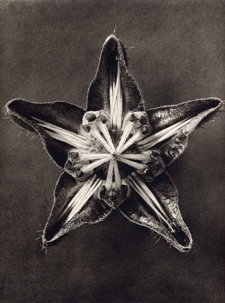
CRVI002818Karl Blossfeldt - Untitled (star-form seed head)
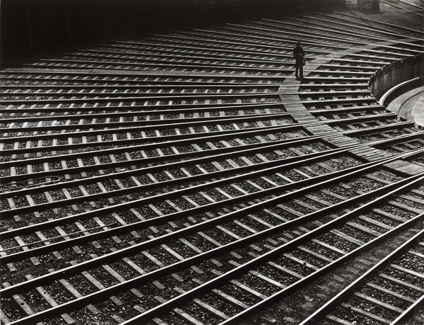
CRVI002824Toni Schneiders - Schienenspinne (Rail Spider)
1950
1950
CRVI002822Albert Renger-Patzsch - Untitled (chimneys)

CRVI002789Waldemar Świerzy - Jazz Jamboree '76
1976
1976